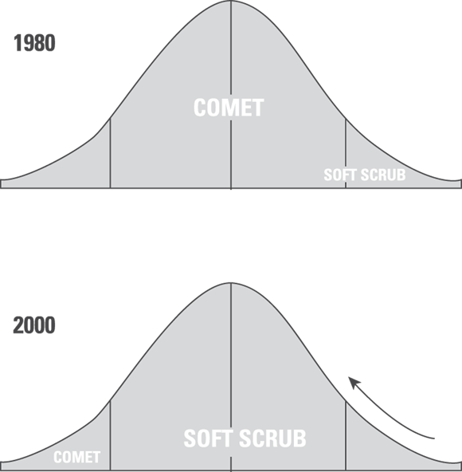
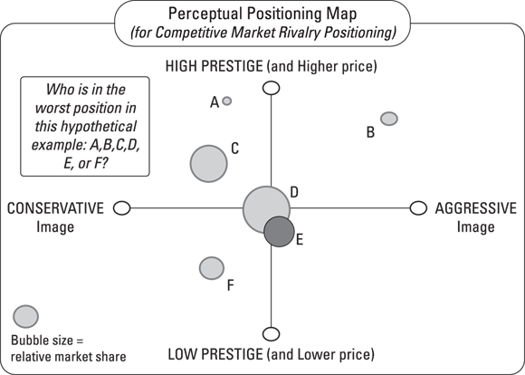

前言
欢迎使用《创业完全指南》第 4 版！
你很可能也怀有创办自己企业、当自己的老板这一普遍梦想。随着经济形势的发展，这一梦想愈发具有现实意义。这不再只是不切实际的幻想；创业已经成为现实，为许多勇敢尝试的人带来了机会和成就感——对你来说也一样。
本书涵盖了各类信息，旨在帮助您了解所需知识并确保您的成功。无论您需要将想法变为现实的技巧与建议、制定商业计划和商业模式、寻找资金、选择法律结构、处理账务、开展营销推广、利用人工智能提高效率，还是想要让企业长期稳健发展，都能在这本书中找到所需的帮助。无论您经营的是本地企业、初创公司、特许经营企业，还是家庭式企业，本书的大部分内容都适用于您。
本书旨在为您提供创办和成功经营企业所需的最佳理念、概念和工具。利用本书中的信息，您一定能打造出梦寐以求的企业，并获得理想中的成功。
关于本书
这本书汇集了多本《傻瓜书》系列商业书籍中的精华内容，这些内容都是经过精心挑选的，旨在帮助新晋企业主/创业者快速上手。无论您目前的商业经验如何（甚至完全没有经验也没关系）。不必担心自己没有多年的管理经验，也不必担心搞不清资产负债表和损益表的区别。
只需支付攻读 MBA 所需费用的一小部分，您就能通过这本书轻松掌握当今最先进、最有效的商业技巧与策略。书中内容均源自现实世界。这不是那种听起来不错、但实际操作却毫无用处的理论堆砌。相反，您将获得最优质的信息、策略和技巧——正是顶尖商学院如今所教授的内容。此外，我们还补充了与人工智能相关的实用建议，包括人工智能究竟是什么、如何产生可行的商业创意、模型和计划，以及如何运用各类工具来处理会计、税务、招聘、内容创作和指导等工作。
这本书也希望能带来一些乐趣——经营企业未必是一件无聊的事！事实上，保持幽默感对于应对所有新创业者不时会遇到的挑战来说至关重要。
简而言之：侧边栏中的文字内容会详细介绍某个主题的细节，但这些内容并非理解该主题的必要条件。您可以随意阅读或跳过它们。标有“技术类内容”图标的文字也无需理会。这些图标对应的文字会提供一些关于创业的有趣但非必要的信息。
最后一件事：在本书中，您可能会发现有些网址（URL）跨了两行显示。如果您是阅读纸质版书籍并想访问这些网页，只需按照文本中显示的地址完整输入，假装换行符并不存在即可。如果您是阅读电子书，那就更简单了——只需点击该网址，就能直接跳转到相应网页。
愚蠢的假设
这本书对你有一些基本假设。比如，你至少对创业感兴趣。（这还用说。）也许你已经创业了，正在寻求改进现有方法的建议。又或者，你只是觉得创业可能适合自己的想法，想先了解相关知识再做决定。无论如何，你来对地方了。
同样可以合理假设：你能够——或者认为自己能够——创造出人们愿意付费购买的产品或服务来。这些产品或服务可以是任何东西。唯一的限制就是你的想象力（当然，还有你的银行账户，关于这一点你很快就会了解到更多）。
最后，本书假定你渴望学习并运用各种新技巧和方法，并愿意从新的角度来理解这一主题。
接下来该去哪里
如果您是创业新手，建议从本书的开头开始阅读，逐页往下看。书中包含大量信息与实用建议。只需翻开下一页，即可开始学习！不过，您也可以从任意章节开始阅读。如果您已经拥有企业并正在经营，但时间有限（谁没有呢？），不妨利用目录和索引，直接查找您当前感兴趣的主题。
无论您以何种方式阅读这本书，我们都衷心希望您能享受这段阅读之旅。
您的业务背景分析
本章从最基础的部分开始，探讨如何跳出局部视角，从更宏观的背景来审视一家初创企业。并非所有企业在诞生之初都是好主意。无论你是否愿意，都需要审视那些会影响企业发展的外部因素。如果在正确的时间、正确的地点选择正确的业务，成功的机会就会大大增加。
介绍可行性分析框架
可行性分析包括一系列在你对某个商业机会了解得越深入时所进行的测试。每次测试之后，你都需要问问自己：是否有什么因素阻碍了前进的步伐，或者你是否仍然想继续推进。可行性分析其实是一个探索过程，在这个过程中，你可能需要多次修改最初的构想，直到最终确定下来。这才是可行性分析的真正价值——它帮助你不断完善和优化自己的构想，从而在创业时获得最大的成功机会。
如今，仅凭一份完善的可行性研究报告，往往就足以获得融资。对于互联网企业而言，速度至关重要。因此，许多互联网公司仅凭概念验证就能获得首轮融资，随后在寻求风险投资等更多资金之前，会进一步完善商业计划书。以下各部分将详细介绍一份全面可行性研究报告的各个组成部分。
执行摘要
执行摘要或许是可行性分析中最重要的部分。因为在短短两页篇幅里，它概括了分析过程中所有测试得出的最重要、最能说服人的结论。一份出色的执行摘要能立刻抓住读者的注意力，让读者对这一理念产生兴趣。它不会让读者轻易放弃阅读；相反，会不断引导读者深入理解这一理念，从而证明该理念确实可行，也必将在市场上取得成功。
在执行摘要中最重要的信息，就是你需要证明客户确实需要你所提供的产品或服务。这一证明来自你与客户进行的调研，通过这些调研可以了解客户对你所提出的概念的看法以及市场需求情况。（关于客户调研的更多信息，请参阅本章后文。）对潜在投资者而言，第二个关键因素是你打算如何通过该业务模式来盈利。这一点我们将在《第一册》的第三章中详细阐述。最后需要重点强调的是关于创始团队的描述。再伟大的想法，如果没有优秀的团队来实施，也无法实现。投资者非常看重创始团队的专业能力和经验。
如果你正在创建一家互联网企业，不妨准备一份所谓的“概念验证文档”。本质上，这是一份仅一页的说明，阐述为什么你的商业模式行得通。其中需重点说明你已经采取了哪些措施来证明用户会愿意使用你的网站。这些证据可以是你的测试版网站的访问数据，也可以是网站上线后已注册并准备使用的用户名单。同样地，如果你正在开发新产品，概念验证其实就是你的最小可行产品或具备市场竞争力的原型。
商业理念
在可行性分析的第一部分中，请回答以下问题：
- 这是做什么生意的？
- 客户是谁？
- 什么是“商业模式”？
- 价值主张是什么？
- 你将如何通过自己的生意赚钱？
- 这些福利将如何发放？
能够用几句话清晰、简洁、直接地阐述自己的商业理念非常重要，这些话必须涵盖该理念的所有要素。这通常被称为“电梯演讲”，因为它短到足以在电梯里讲述。这意味着你只有几秒钟的时间来吸引听众的注意力，所以必须迅速而自信地把所有内容表达清楚（希望进行演讲时，听众正好在高楼的顶层）。如果你正在为投资者准备可行性分析报告，就需要在概念部分首先阐述商业理念。之后再逐一详细说明各个要点。以下是一个例子：
HomePortfolio 为寻求家居设计产品的顾客提供了一个便捷的在线平台。该平台汇集了来自 10 万家的零售商的 70 多万种产品。借助可搜索的风格标签，顾客可以更快速地找到自己中意的商品，并将它们保存在自己的作品集中，还可与他人分享。
在您进一步了解自己的商业理念时，还应考虑能够提供的各种衍生产品和服务。为公司寻找多种收入来源始终是个好主意。
相比于提供多种产品/服务的公司，专注单一产品的企业在取得成功方面面临更大困难。你不应该把所有资源都押在某一产品上，而应给顾客更多选择，这样才能让他们不断回头光顾。
行业分析
在可行性分析中，必须评估你将要进入的行业是否能够支持你的业务模式。所谓行业，指的是那些在同一个价值链或分销渠道中相互协作、共同将产品交付给客户的企业群体。你需要描述该行业的整体状况：它是否处于增长阶段、有哪些发展机遇、谁是行业内的意见领袖、以及该行业是否乐于接受新技术。此外，还要了解该行业中是否有其他规模较小、较新的企业，以便你有机会进入该领域；同时，也需要预判该行业的未来发展趋势。
别忘了，识别绝佳机会的方法之一就是先研究该行业。本章后面会介绍如何进行行业分析。
市场/客户分析
企业虽然属于某个行业，但实际是在市场中进行竞争。在进行市场分析时，需要进行客户调研——尽可能了解哪些人会购买你的产品或服务。其目标是找到“第一个客户”，也就是那些正面临你的企业所要解决的关键问题的人。如果你能准确识别出这些关键问题，那就成功了一半。如果这些问题是其他企业尚未解决的，那么你就找到了市场中的空白领域——也就是那些尚未被满足的市场需求。这意味着你有机会占据该领域并主导整个市场。
在分析的这一部分，你还需要了解潜在客户所期望获得的好处，以及对你所提供产品/服务的需求情况。这类客户有多少？其中会有多少人选择从你这里购买产品/服务呢？此外，你还需考虑各种不同的销售渠道，以便以客户期望的方式将产品/服务的好处传递给他们。关于市场分析的更多内容，请参阅本章后面的部分。
创始团队分析
投资者会非常仔细地考察创始团队，因为即便拥有再好的理念，如果没有能够将其付诸实施的团队，也难以实现。在分析这一环节，你需要重点考虑创始团队的资质、专业能力以及经验。
如果你打算以个人创业者的身份来做这件事，我们建议你重新考虑。大多数成功的初创企业都是由团队共同打造的。原因在于，当今的商业环境极其复杂且变化迅速，没有任何一个人能够同时拥有完成所有工作所需的所有技能、时间和资源。
话虽如此，你仍然有很多办法来弥补自己所缺乏的技能和人才。这并不是说你无法独自创业。你当然可以。不过，这类创业项目最好不需要大量的专业投资资金，因为投资者通常不青睐个人创业项目。
产品/服务开发分析
无论您是打算提供产品、服务，还是两者兼有（通常都是如此），都需要进行充分的规划。请思考为将产品或服务推向市场，必须完成哪些任务：无论是从原材料开始制造产品并可能申请专利，还是制定服务实施的计划。明确各项任务并制定完成时间表。
财务分析
一旦确定有市场和团队之后，就到了考虑资金问题的时候了。（你可能以为我们永远都不会谈到这点！）在可行性分析的这一部分，你需要弄清楚启动业务并实现正现金流需要多少资金，所谓正现金流，指的是收入大于支出。顺便说一下，可行性分析的这一部分也是简要描述“商业模式”的地方（详情请参见第一册的第三章）。此外，还需要区分不同类型的资金——现金、投资、债务——这些在制定财务战略时都很重要。
可行性决策
在完成了构成可行性分析的所有各项测试之后，你就该决定是否要继续推进了。当然，在进行这些测试的过程中，你可能会因为对行业、市场、产品/服务等方面的分析而决定放弃。但如果你依然决定继续，现在就是明确继续推进所需条件的时候了。
发布时间线
在可行性分析的最后制定行动计划非常重要，这样才能增加各项计划得以实施的概率。列出需要完成的任务及相应的完成时间表，有助于确保企业能够按时启动运营。此外，还将资金需求与各项里程碑相结合也是个好主意。你所做的调研会带来回报：它能帮助你准确估算完成所有准备工作并开启业务所需的时间。
了解您的行业
我们生活在一个新产业不断涌现的时代。人工智能、可再生能源与替代能源、大数据分析都属于新产业的范畴。由于这些都是基础性技术，因此可以被应用于各种市场，服务于不同类型的客户。例如，物联网这项相对较新的技术被广泛应用于健身领域、医疗保健、物流乃至农业等领域。在医疗保健领域，医院工作人员现在会常规地为卧床患者佩戴联网可穿戴设备，以监测他们在床上的翻身频率——这一动作对患者的健康至关重要。得知目前连接到互联网的设备数量比地球上的人口还要多，你感到惊讶吗？
一个行业的定义取决于其在特定领域所生产的产品和服务。
各个行业都是由多个层次构成的，从最宽泛的类别开始，逐层细化为更具体的分类。以大家熟知的电子商务企业为例： Amazon.com 。如果把电子商务视为一个行业，即由各类相关企业组成的群体，那么亚马逊就是该行业的一部分。事实上，它是美国在线零售领域的领先企业。在在线零售领域内，亚马逊又是一家以互联网作为营销/分销渠道的零售企业。在零售业范围内，亚马逊还涉足出版、音乐、玩具、视频等多个领域，因为它充当了这些行业的产品分销渠道。
对于你用于可行性研究的行业，应从最宽泛的行业定义入手，逐步细化到包含你所提供产品或服务的具体领域。那就是你的主要行业。
采用产业结构分析框架
了解你感兴趣的行业的其中一个方法是使用通用的分析框架。其中一个值得参考的框架源自 W.H. Starbuck 和 Michael E. Porter的研究成果，他们是组织战略领域的两位知名专家。他们的观点在图 1-1 中有所体现，该图展示了企业家必须持续关注那些影响企业各个层面的各种因素。
如果创业环境看起来像战场——其实往往确实如此！但每个威胁都有相应的应对之策。第一步就是了解这些外部力量。

承载能力、不确定性与复杂性
这一首要的环境因素解释了为何如今众多行业都在发生变革，发展速度加快，同时也让企业更难取得成功。承载能力指的是一个行业能够容纳多少新企业的限度。你可能没有意识到，行业也有可能因为企业过多而变得过度饱和。一旦出现这种情况，企业生产产品和服务的能力就会超过市场需求。这样一来，新企业想要进入该行业并生存下来就变得愈发困难。
不确定性指的是某个行业的可预测性或不可预测性——即稳定性或缺乏稳定性。通常，那些波动大、变化快的科技行业会带来更多的不确定性。不过，也正是这些行业，往往为新企业提供了更多可利用的机会。
复杂性指的是某个行业中输入和输出的数量及多样性。在复杂行业中，企业需要应对的供应商、客户和竞争对手数量都多于其他行业。生物技术和电信行业就是典型的例子，这些行业由于竞争激烈和政府监管严格而具有很高的复杂性。
某些行业的进入壁垒相当高。企业家在试图进入该行业之前，需要仔细研究这些壁垒。以下是主要的一些壁垒：
- 规模经济：指的是能够使企业以较低成本生产商品的产品数量。新兴企业很难与老牌企业的低成本优势相竞争。为应对规模经济带来的挑战，新兴企业通常会结成联盟，从而形成自身的规模经济优势。
- 品牌忠诚度：如果您是一家初创企业，可能会面临那些已经建立起客户忠诚度的竞争对手。这样一来，吸引客户使用您的产品和服务就会困难得多。因此，找到一个自己能够掌控的市场细分领域至关重要——也就是那些市场上尚未得到满足的需求。这样，您就有时间建立起自己的品牌忠诚度。关于市场细分领域的更多信息，请参阅本章后文。
- 高资本要求：在某些行业中，为了与老牌企业竞争，企业需要在广告、研发以及厂房设备等方面投入巨额资金。同样，新兴企业通常通过将这些高成本业务外包给其他企业来克服这一障碍。
- 买家转换成本：除非有充分的理由，否则买家通常不愿意从一家供应商转向另一家。为了吸引客户更换供应商，创业者必须证明自己的产品能够满足现有产品无法满足的需求。
- 获取分销渠道的途径：每个行业都有一套将产品送达客户的手法。新公司若想取得成功，就必须能够利用这些分销渠道。唯一的例外是，当新企业找到了某种客户能够接受的产品或服务交付方式时。互联网成为在线零售的分销渠道时，正是这种情况。
- 自有优势：成熟企业可能拥有某种技术或地理位置优势，从而在新企业面前具有竞争优势。不过，新兴企业往往也凭借自身的独特优势进入某个行业，从而在短时间内享有相对没有竞争的环境。
- 行业敌意：在某些行业中，竞争对手会设置种种障碍，阻止新企业的进入。由于这些竞争对手通常是拥有丰富资源的成熟企业，它们完全有能力采取各种手段将新进入者挤出局外。因此，即便身处充满敌意的行业，只要能在市场中找到合适的细分领域，企业依然有望生存下去。
替代产品/服务的威胁
请记住，您的竞争对手不仅包括那些提供与您相同产品和服务的企业，还包括那些提供替代产品的企业——这些产品或许能以不同的方式解决同样的问题。例如，餐厅之间在食品质量、菜品种类和价格等方面展开竞争。而竞争对手可能会提供完全相同的服务，只不过是通过娱乐形式来呈现。Magic Castle 就是一个例子，它以魔术表演作为娱乐特色。
买方议价能力带来的威胁
当买家能够大量采购时，他们就有能力压低行业价格。例如，Costco 和沃尔玛等公司就拥有这种采购实力。相比之下，新进入者通常无法以批量采购的价格进行采购；因此，他们不得不向顾客收取更高的价格。这样一来，如果对顾客来说价格是唯一的考量因素，新进入者就更难在竞争中取胜。
供应商议价能力带来的威胁
在某些行业中，供应商有权提高价格或改变其向制造商或分销商提供的产品质量。当该行业的供应商数量相对较少，且它们又是该行业原材料的主要供应方时，这种情况尤为明显。别忘了，劳动力也是供应要素之一。在软件等行业，高技能劳动力十分短缺，因此价格会上涨。
现有企业之间的竞争
竞争激烈的行业会迫使价格下降（利润也随之减少）。这时就会出现价格战，就像航空业所经历的那样。一家公司降低价格，其他公司很快也会跟进。这种策略会损害整个行业的利益，也让新进入者几乎无法在价格上展开竞争。相反，精明的企业家会努力寻找市场中尚未被满足的细分领域，在那里他们不必在价格上竞争，而是通过所提供的价值来竞争。
确定进入策略
你所处行业的结构将在很大程度上决定你进入该行业的方式。如果不考虑行业结构，你可能会花费大量时间和金钱，最终却发现选择了错误的进入策略。到那时，你可能已经错失了良机。一般来说，新兴企业有三种主要的进入策略：差异化竞争、专注细分市场以及成本优势。这是一个至关重要的决定，因此本节将详细探讨每种策略。
- 差异化：通过差异化战略，企业试图通过产品/流程创新、独特的营销或分销策略以及品牌建设，使自身在行业中区别于竞争对手。如果能够通过差异化战略赢得客户忠诚度，那么企业的产品或服务就不那么容易受价格波动的影响，因为客户会认可与该公司合作所带来的内在价值。
- 利基市场：利基战略或许是新兴企业最常用的创业策略。因为它能让创业者在一段时间内进入一个没有直接竞争对手的市场。该策略包括寻找并创造一个市场上无人涉足的领域——去满足那些尚未被满足的需求。这样的利基市场为创业者提供了空间和时间，使其不必与行业内的老牌企业正面竞争。创业者可以先在这个领域确立标准、建立品牌忠诚度，然后再等待其他竞争者进入该市场。
在为商业决策做调研时，先找出所有可能危及企业生存的因素，然后再关注那些积极的支撑因素。如果发现了负面因素，比如市场规模过小或监管过严，要进一步深入调查。负面因素或许是你能收集到的最重要信息，因此不要回避它们。
- 成本优势：对于初创企业来说，要成为低成本领先者极其困难，因为这一策略高度依赖大规模销售和低成本生产，而这两点都是初创企业难以承担的。不过，当初创企业处于一个所有参与者都面临相同劣势的新兴行业时，它们或许可以凭借提供最低成本的产品和服务来获得优势。
你应该避免在价格上竞争。以如今的搜索引擎技术，顾客只需上网就能轻松找到全球最低的价格。你应该在功能和服务上展开竞争，其中服务尤为重要。如果你的产品或服务无法解决顾客面临的紧迫问题，那么无论在何种情况下，你都将难以与之竞争。
注意到几点需要注意的事项
在此需要就“行业分析”再提两点需要注意的事项。
前几节所描述的方法论由哈佛大学著名教授Michael Porter在 20 世纪 80 年代推广开来。这一方法很快在学术界和商业界广为流传，被称为“竞争分析”。对教授和学生而言，其受欢迎的原因在于它为制定企业战略提供了易于使用的框架；对商业从业者来说，该模型的吸引力在于它展示了如何盈利。本质上，该模型强调：通过避免与其他行业现有企业直接竞争，可以实现利润最大化。具体做法包括：为新进入者设置进入壁垒（例如利用专利）；通过让客户承担“转换成本”来保持其忠诚度（例如设计不可转让的航空里程计划）等等。企业越能在价格竞争上做到独善其身，盈利就越容易。
难怪商界领袖们如此青睐这一模型！然而，时代已经变了：数字化和互联网的兴起彻底改变了商业格局。正如我们之前所指出的，如今的消费者能够获取海量信息，因此可以轻松找到最优惠的交易。因此，波特模型虽然有助于理解所处行业的运作方式，但很少能直接作为盈利的指导模板。
关于行业分析，还有另一个问题需要引起您的注意。在前面“运用行业结构分析框架”这一部分中，我们将亚马逊列为电子商务零售行业的企业。要评估该企业在该领域的前景，就需要深入研究整个行业。但亚马逊的成功仅仅源于其在电子商务领域的实力吗？其实并非如此。该公司超过一半的利润来自其子公司 AWS（亚马逊网络服务），该机构为众多企业提供互联网云服务。有分析人士甚至认为，如果没有 AWS 带来的盈利，亚马逊恐怕难以生存。再来看谷歌：它究竟在哪个行业竞争呢？当然是在线搜索领域。但实际上，谷歌 75%以上的收入来自广告业务。那么，谷歌到底是一家搜索公司、广告机构，还是信息提供商呢？
此类例子不胜枚举。现代 21 世纪的企业越来越倾向于在多个市场同时展开竞争，而这些市场并非都是其利润的主要来源。这一情况使得传统的波特行业分析模型变得不再那么适用。在研究你打算进入的新领域的竞争格局时，请务必牢记这一点。
研究你的所在行业
深入了解你所处的行业，是制定任何商业战略的关键。虽然这需要付出大量精力，但其带来的回报往往是巨大的。
幸运的是，如今利用二手信息来研究某个行业要容易得多——也就是说，那些由他人收集的信息，因为这些数据都很容易从网上获取。使用可靠的搜索引擎是个不错的起点。这能让你了解该行业的大致情况以及当前趋势。行业杂志、Gartner Inc.（这家以研究新兴技术而闻名的咨询公司），以及你所在地区的学院或大学，也都是获取行业信息的优秀渠道。无论使用何种信息来源，都要问问自己：这些信息是谁提供的？他们的目的何在？又具备怎样的专业资质？
如何核实信息来源？你可以采取以下措施：
- 问问自己，该网站或作者在该领域是否具有权威性或专业性。
- 向那些熟悉你所研究领域的人士咨询，问问他们是否听说过那个网站或那个人。
- 将该网站或该人士的说法与其他人的观点进行比较。如果有多个来源的说法一致，那大概没问题。但如果发现很多矛盾之处，就需要进一步调查了。当然，不要以为只要很多人认同某件事，它就一定是真的；谣言不正是这样传播开来的吗？
二手数据有助于全面了解某个行业的情况。不过需要注意的是，二手信息可能已经过时。因此，对所处行业进行一手调研非常重要。一手调研意味着要深入该行业，与业内人士进行交流。这些业内人士包括：
- 行业分析师
- 供应商和经销商
- 客户
- 关键行业企业的员工
- 律师事务所、会计事务所等服务机构的专业人士
- 贸易展会上的专家们
回答关于您所在行业的关键问题
当你开始研究所在行业的相关信息时，可能会被海量数据淹没。为了有效管理这些数据，不妨从那些你需要解答的关键问题入手。这些问题包括：
- 该行业正在增长吗？增长可以通过多种方式来衡量：员工数量、收入、产量，以及进入该行业的新公司数量。
- 主要参与者是谁？你需要了解哪些公司在该领域占据主导地位、它们的战略是什么，以及你的业务与它们有何不同。
- 该行业中的机会在哪里？在某些行业中，新产品和服务能带来更多机会；而在另一些行业中，创新的营销和分销策略才能决定成败。
你需要回顾和展望整个行业的发展历程，判断过去发生的事情是否预示着未来的趋势。了解行业分析师对行业未来的预测也很有帮助。但要想真正了解行业的未来，最好关注那些正在研发中、可能五年内才会面市的新技术。以下是一些你可能需要寻找答案的问题：
- 新技术的现状如何？在研发方面的投入又有多大？您想了解该行业创新的快慢，以及总体上在研发上投入了多少资金。
- 你们的行业能快速采用新技术吗？如果属于传统行业，那么采用新技术的速度可能会较慢。相反，新兴行业在技术应用方面通常更为迅速，因此你们需要做好相应准备。
- 你们的行业是以技术为基础的，还是由新技术推动发展的？只要看看各大企业在新技术研发上的投入规模，就能很好地了解技术对你们行业的重要性。同时也能了解到产品开发周期的快慢，从而判断出竞争所需的反应速度。
- 该行业中有没有年轻且成功的企业？如果你发现所在行业中没有新公司成立，那么很可能这是一个由几家主导企业构成的成熟行业。这并不一定意味着你无法进入该行业，但确实会大大增加进入的难度和成本。
- 该行业面临哪些威胁吗？您或其他人是否察觉到任何可能使该行业某个领域走向淘汰的因素？当然，如果您在 20 世纪 80 年代初从事办公设备机械行业，那么随着个人电脑的推出和普及，您肯定已经预见到了即将到来的变革。
- 该行业的典型毛利率是多少？毛利率（或称毛利润率）反映了企业可以承受的多大误差范围。毛利率是指毛利润（销售收入减去销售成本）占销售总额的百分比。如果像食品杂货行业那样，该行业的毛利率仅为 2%（有时甚至更低），那么企业几乎没有出错的余地：因为 98%的收入都用于支付直接生产成本。只剩下 2%的资金用于支付管理费用和实现盈利。另一方面，在软件等行业，毛利率可高达 70%甚至更高，因此企业有更多的资金用于支付各种费用和获取利润。
研究上市公司
在大多数行业中，上市公司——即在证券交易所上市的公司——都是规模最庞大、实力最雄厚的企业，往往也是该行业的领军者。因此，了解这些公司是很重要的。它们还可以作为该行业最佳实践的参考标准。目前有大量与上市公司相关的在线资源。以下是其中一些较好的资源：
- D&B Hoover’s Online, <www.dnb.com/products/marketing-sales/dnb-hoovers.html> ：这是邓白氏的官方网站。该平台提供了涵盖全球 4.2 亿多家公司的最全面商业数据。无论是寻找高价值的目标企业，还是获取所在行业重要企业的关键信息，这都是绝佳的来源。您可以在有限时间内免费试用 D&B Hoover’s Online。
- 美国证券交易委员会， <www.sec.gov> ：该网站包含证券交易委员会的 Edgar 数据库。虽然用户界面不太友好，但其中有关于上市公司的诸多有用信息。
- Free Edgar, <www.freeedgar.com> ：这里是研究上市公司以及那些已申请上市的公司的好去处
在政府网站上搜索数据
你会发现一个庞大的政府网站网络，其中大部分内容都是关于经济新闻、出口信息、立法动态等方面的免费信息。这些网站主要通过两个渠道被链接过来：
- USA.gov, <www.usa.gov>
- FedWorld, <www.thecre.com/fedlaw/legal30/supcourt.htm>
如果您无法连接到这些网站中的任何一个，请尝试使用其他浏览器。
您可能还想直接访问以下许多其他常用网站：
- 美国商务部， <www.doc.gov> ：在这里，您可以找到关于美国经济的所有你想知道的信息。
- 美国人口普查局， <www.census.gov> ：这里汇集了每十年一次人口普查所统计的数据。
- 劳工统计局， <www.bls.gov> ：这是一个提供经济相关信息的网站，重点关注劳动力市场。
- 专利与商标局， <www.uspto.gov> ：本网站汇集了您想了解的关于专利、商标、版权以及各类产品和服务法律保护措施的所有信息。
- 美国众议院， <www.house.gov> ：如果您正在关注可能影响您所在行业的任何立法，那么这里正是您该查看的地方。
使用人工智能工具
如果我们不告诉您，人工智能领域那些令人兴奋（有时也令人恐惧）的新技术在开展行业研究时能发挥重要作用，那未免失职。除了之前提到的各种工具外，人工智能也是极其重要的信息来源。利用人工智能，您能在极短的时间内获取所需信息，其成本也远低于传统方法。
- 该模型通过在大型数据集上学习来生成输出结果。例如，它可以回答诸如“2021 至 2025 年这五年中，美国在各个年份里对某种产品的市场需求有多大”或“哪些公司正在研发某种产品的新版本”之类的研究问题。
- 该模型中的算法使其能够即时扫描整个网络。它会搜索与你所定义的主题相关的所有现有数据——也就是你用来构建搜索问题的那些“提示词”或词语。该模型会分析从网络上获取的文字内容中的各种模式和关联，然后利用这些信息来生成符合人类语言逻辑的回应。
- 没错，您没看错：GPT 真的能在几分钟甚至几秒钟内，吸收互联网上现有的所有信息。之后，它会用连贯的英语（如果您使用的是这种语言）出具分析报告。
- 该模型还能生成可视化内容。随着这项快速发展技术的不断进步，它能够生成各种图表、表格和图像。此外，借助“智能体 AI”，该模型还能根据历史趋势和数据分析能力，预测市场走向，并为如何实现预期目标提供指导建议。
例如，OpenAI 的 ChatGPT 平台能够在无需人工干预的情况下完成研究任务——用户只需给出相应的指令来启动流程即可（也就是说，用户不必费力去到处寻找那些缺失的数据）。OpenAI 是一家 2015 年成立于旧金山的研究实验室。该机构宣称自己的目标是打造“安全且有益”的通用人工智能，其定义为“在大多数具有经济价值的工作中都能超越人类表现的高度自主系统”。
先进行初步的试用测试：
- 在您的设备上打开 ChatGPT 网站。
- 登录或创建免费账户。
- 可以直接输入指令或用语音命令告诉 ChatGPT 该做什么（即“提示词”）——例如：“目前在印第安纳波利斯开设一家高端女性服装店是个好主意吗？”
非常简单吧？如果你能顺利完成这个小测试，那就继续阅读本书的其余部分吧。我们在书中会指出人工智能可能在哪些领域发挥作用。
尽管 OpenAI 最近引发了诸多争议——这反映出社会普遍担忧人工智能会对我们生活的方方面面构成威胁——但人工智能在档案研究领域的巨大潜力却是毋庸置疑的。
然而，事实是，人工智能在几乎所有商业领域都发挥着至关重要的作用（产业研究仅仅是其中之一），因此各种竞争平台纷纷涌现。以下所有人工智能平台都在激烈地与 ChatGPT 争夺用户的关注与支持：
- 谷歌开发了 Gemini。
- Anthropic（由前 OpenAI 员工创立）开发了 Claude。
- 微软拥有 Co-Pilot 技术（同时还持有 OpenAI 的大部分股份）。
- Meta（即 Facebook）大力宣传 Meta AI。
- 亚马逊提供了 Amazon Q 服务。
- 企业家埃隆·马斯克大力宣传 xAI。
快速浏览一下 <www.domo.com/learn/article/ai-data-analysis-tools> 吧。该网站概述了目前一些领先的人工智能工具（不过需要注意的是，自本书付印以来，可能又有一些新工具加入了竞争行列）。
你可能现在已经意识到，人工智能不仅是一种能协助你完成行业研究任务的强大工具，也对许多企业的未来构成了直接威胁。例如：
- 股票经纪公司正在利用人工智能来为客户制定理想的投资组合分配方案——这项工作通常由薪酬优厚的财务顾问来完成。
- 学生们逐渐意识到，人工智能可以帮他们完成作业，从而不再需要家教了。
- 婚礼策划师正面临灭绝的威胁，因为人工智能能够处理这一充满情感意义的仪式中最为繁琐的细节——而且无需支付雇佣人工的开支。
此类情况不胜枚举，因此在考虑进入创业领域时，务必将这一点纳入可行性分析中。
最后一点：虽然人工智能是你在为新项目收集数据时通往理想目标的捷径，但这并不意味着传统方法毫无价值。人工智能本质上只是一种工具，其效果完全取决于它所收集和分析的数据质量。通过亲自从事那些传统的工作，仔细筛选海量信息，你或许能发现一些珍贵的信息，或者找到解决难题的关键线索——而这些信息可能从未被上传到互联网，因而也逃过了人工智能的“捕捉”。
所以这里的教训是：正如我们在本章中所描述的，应将人工智能驱动的行业数据搜索与个人调查能力相结合。（给聪明人的提示：同样的建议也适用于第二册的第一章。）不要陷入“工具决定一切”的谬误——也就是说，不要以为工具能解决所有问题（比如：如果你把锤子交给孩子，他们就会觉得周围的一切都是钉子！）。
暂时离线以进行更多研究
互联网并非获取重要信息的唯一途径。一些值得考虑的离线信息来源包括：
- 行业贸易协会：几乎每个行业都有自己的贸易协会，这些协会通常会出版相应的期刊或杂志。贸易协会会密切关注本行业的动态，因此是信息丰富的渠道。如果你真心想在某个行业创业，不妨考虑加入相应的贸易协会，这样就能获取内部信息了。
- 人脉、人脉、还是人脉：抓住一切机会与行业内的人士交流。他们每天都在一线工作，能提供比媒体或互联网上更及时的信息。
进行客户发掘工作
正如本章前面所提到的，产业是指在同一价值链中运作的各类企业的集合。这些企业在不同的市场上相互交易、相互竞争。市场则是指某个产业所服务的客户群体。请看图 1-2，进行可行性分析时，应从更广泛的产业层面逐步细化到更具体的市场细分领域。
客户发现是一种通过同理心来获取客户信息的做法。这也被称为设计思维方法。其核心在于：让企业站在客户的立场来思考问题，从而从客户的视角审视自己所提供的产品或服务。我们必须反复强调：从客户的角度来评估产品/服务至关重要。要做到这一点，就需要深入了解客户，而这需要付出一定的努力——也就是所谓的客户发现过程。
在客户发现过程中，可以先对潜在客户有一个较为宽泛的定义。请记住，随着对客户的了解加深，你需要不断细化这个定义，使其更加精确。

如果你认真对待这个过程，可能会发现：自己之前对客户及其需求或愿望的假设，实际上与现实情况大相径庭。例如，Mikita、DeWalt 和 Craftsman 这类公司都生产用于电钻的钻头——那些由各种尺寸的合金金属制成的旋转部件。这些公司就是在这一领域展开竞争的。但客户真正想要的是什么呢？并非钻头本身。他们想要的是在某种材料上打孔：木头、塑料、石膏板、金属，无论是什么材料。钻头只不过是实现目标的工具而已。谁知道呢，也许某个你尚未考虑过的竞争对手，正在研发基于激光的新技术，能以更简单的方式满足客户的需求。因此，在分析客户时，不要只盯着表面现象：要弄清楚真正驱动他们需求的原因，并将这些因素纳入你的商业计划中。
为了应对在感兴趣的市场中遇到的海量数据带来的困扰，你可以牢记以下几个关键问题：
- 你能进入哪些潜在市场？这些市场之间有明显差异吗？它们的规模有多大，增长趋势如何？
- 在你正在考虑的所有市场中，哪些客户的需求最为迫切？换句话说，谁最需要你的解决方案？
- 这些客户是如何购买产品的？购买的频率如何？他们通常是通过什么渠道了解到该产品或服务的？
- 你将如何满足他们的需求？你能提供哪些具体的好处？
就像你在进行行业研究时所做的那样（正如我们在本章前面所描述的），你首先需要了解整个市场概况，因为这会影响到你日后确定的各个细分市场。以下是一些有助于你全面了解整个可进入市场——也就是所有潜在客户的信息：
- 市场规模有多大？市场规模越大，机会就越多，能够占据的细分市场也越多，从而有助于企业的成长。
- 该市场的人口统计特征是什么？人口统计数据包括年龄、收入、种族、职业和教育程度。这些数据常被用来将市场划分为不同的目标群体。（市场细分的内容将在下一节中介绍。）需要注意的是，人口统计特征也适用于作为客户的各类企业——例如，企业的规模、收入水平、员工数量、市场份额等等。
- 在这些目标群体中，哪一个最有可能购买您的产品/服务？为什么？
- 你有办法接触这个目标群体吗？竞争对手目前是如何接触该群体的？这个群体是否集中在某个特定的地理区域？
- 针对这一群体，哪些营销策略取得了成功？
在这一点上，你所收集的所有信息都来自二手资料——也就是别人的数据。你所收集的研究数据的可靠性完全取决于这些数据来源的可靠性。因此，请务必比较多个来源的数据，以确保其能用于你的计算分析。
对市场进行细分
在每个庞大的客户群体中，都包含着不同的细分群体。例如，在购买书籍的庞大客户群体中，就包含着各种不同偏好的客户群体：
- 旅游类书籍（或任何其他类别的书籍）
- 儿童读物
- 适合自己动手的读物/适合 DIY 爱好者的书籍
- 有声书
在每个市场细分领域中，都可以找到更小的细分市场——那些可能尚未得到满足的特定需求，例如：
- 专为残障人士编写的旅游书籍
- 以少数族裔为题材的儿童读物
- 教给手工爱好者如何应对各种技术的书籍
- 为专业人士提供最新期刊文章的有声书
市场细分领域为创业者提供了机会：趁大公司还未注意到并进入该领域竞争之前，先进入该市场并占据主导地位。独自占据一个小细分领域意味着你可以有一段“平静期”，在这段时间里，你可以独自满足那些尚未被满足的客户需求。这样一来，你就能为该领域制定标准并不断提升自己的技能。简而言之，至少在一段时间内，你都是该领域的市场领导者。
在确定目标市场时，请务必确保所选择的细分市场足够大，具备盈利潜力。你所选择的细分市场必须拥有足够的客户愿意购买你的产品，这样才能让你支付各项开支并实现盈利。关于如何进行市场调研，我们将在本章后面部分详细探讨。
确定目标市场，其实就是找出最有可能购买你产品或服务的人群——也就是你的主要客户。之所以要确定这些主要客户，是因为让新产品或服务被客户知晓既耗时又耗钱，需要大量的营销投入。而很少有初创企业能承担这样的成本。因此，与其试图覆盖各种类型的客户，不如把精力集中在那些最有可能购买你产品的客户身上，这样效果会好得多。更重要的是，先从最容易销售的客户入手，有助于你快速站稳脚跟、提升品牌知名度，进而更轻松地开拓其他潜在客户。
并非所有客户都是个人；很多是其他企业（B2B 交易）。事实上，如今互联网上交易额最大的是企业间的交易。如果向您付款的是分销商、批发商、零售店或制造商，那么您的客户就是企业，而非个人消费者。作为客户的企业的描述方式，与描述个人基本相同。企业有各种不同的规模和营收水平。与消费者一样，企业也有各自的采购周期、喜好和偏好。
请不要忘记，如果您的客户是另一家企业，那么该企业可能并非您产品或服务的最终用户。在这种情况下，您同样需要与最终用户打交道。最终用户才是真正的消费者，也就是实际使用产品或服务的人。例如，请参见图 1-3，该图展示了一种典型的产品分销渠道。

如果图 1-3 中的分销渠道里摆满了你的产品——比如冰箱——那么你的客户是谁呢？这取决于你的公司在价值链中的位置。如果你是制造商，你的客户就是从你这里购买冰箱后再转售给零售商的分销商。而零售商则是分销商的客户。最终使用冰箱的消费者，既是零售商的客户，也是你的最终用户。（确定客户的最简单方法就是找出谁在向你付款——跟着钱流去吧！）
仅仅因为最终用户从技术层面来讲并非你的客户，这并不意味着你可以忽视他们。相反，你需要像了解客户一样了解最终用户，因为你必须让经销商相信：你的产品有市场前景，最终用户会购买足够数量的产品，从而使经销商和零售商能够盈利。因此，你必须对最终用户进行与对经销商相同的研究。很抱歉，这意味着工作量会翻倍，但这是值得的。
确定你的细分市场/目标受众
定义和分析目标市场的主要目的是为了找到进入该市场的途径，从而获得竞争的机会。如果没有战略就进入市场，只会自取失败。你毕竟是个新来者。如果顾客无法区分你的产品与竞争对手的产品，他们就不太可能从你这里购买。人们通常更愿意与熟悉的人打交道；如果他们对竞争对手的产品很满意，就不愿承担更换品牌所带来的成本。
利基战略或许是企业家最理想的策略，因为它能带来最大的控制权。正如我们之前所说，打造出无人涉足的利基市场是成功的关键。这样一来，你就能成为行业领导者，为后来者制定标准。作为该利基市场的唯一参与者，你可以在出现直接竞争对手之前，先在相对稳定的环境中发展业务（即“平静期”）。应对竞争对手需要大量营销投入，而对于初创企业来说，有限的资源有更重要的用途。
如何找到别人尚未发现的细分市场呢？通过与客户沟通、了解他们的需求来发现问题。你的商业机会所源自的目标市场，同时也蕴含着你的进入策略的答案。从潜在客户那里，你能了解到竞争对手的产品和服务中缺少了什么。他们还会告诉你，要让他们对你的产品感到满意，需要满足哪些需求。满足这些未被满足的需求，就是你的进入策略。请记住，客户购买的是各种好处，因此要留意诸如“节省时间”、“省钱”或“让客户看起来更年轻、更富有、更苗条、更聪明”之类的描述。每一个出色的解决方案背后，都有一位明白客户价值观的企业家——而这些价值，永远是与客户直接相关的利益。
锁定产品解决方案
许多创业者都想从事产品相关业务，但不太清楚该如何入手。当然，你可以从其他国家进口产品，或者从国内制造商那里采购商品。但如果你想研发和销售全新的技术或具有独特性的产品，那么你有三种选择：自行发明、与发明者合作，或获得专利许可。以下部分将更详细地探讨这些方法。
成为发明家
大多数企业家并非发明家——并非因为他们没有发明能力，而是因为他们的注意力集中在其他地方。企业家和发明家的思维方式往往大相径庭，很难在同一个人身上同时找到这两种特质。不仅思维方式不同，各自所需的技能也截然不同。一般来说，纯粹的发明家并不关心事物的商业层面。他们发明只是出于对发明的热爱。除非有企业家发现该发明的商业价值，否则这项发明很可能无法进入市场。
许多类型的发明家——工程师、科学家等等——更喜欢在实验室里工作。你需要问问自己哪种角色更适合自己，然后选择它。其他所需的人才总能在别人身上找到。事实上，大多数发明家永远无法看到自己的发明进入市场，因为他们不了解将新技术转化为商业产品的整个流程。
与一位发明家合作
企业家通常会与发明家合作，将新产品推向市场。与发明家合作的机会往往来自你所在的行业。当你听说有人正在开展某个项目时，不妨深入调查，看看是否有有趣的发明。不要犹豫，主动与发明家联系吧，但需要注意几点重要事项：
- 发明家通常对自己的发明充满疑虑。他们坚信一定有人想窃取他们的创意。
- 发明家通常不具备商业头脑，也不想成为商人。他们热爱发明创造，因此不必指望他们能在商业领域发挥作用。
与发明人共同制定一项安排，确保该安排不会妨碍你们将发明商业化的努力。你们各自都为这项合作带来了非常重要的元素，因此在签署任何书面协议之前，务必确保能够良好地合作。
发明的许可授权
企业、大学、政府以及独立发明家都在寻找能够将其发明商业化的创业者。你可以通过一种被称为“许可协议”的方式获得这些发明的使用权。许可协议赋予你在约定时间内、以约定方式使用该发明的权利。作为回报，你需要向发明家支付使用费，通常是根据该发明带来的产品销售额的一定比例来计算的。
政府拥有许多为军事和航空航天计划等开发的核心技术。你可以获得这些核心技术的许可，并将其应用于其他行业。例如，如果你访问 NASA 的技术网站 https://technology.nasa.gov ，就可以浏览通过 NASA 的许可计划可以获得的、具有商业价值的专利。
或者，您可以前往各大知名研究型大学的科技许可办公室，那里会有更多机会。例如，斯坦福大学的科技许可办公室负责评估、推广和许可斯坦福大学拥有的各项技术。如果您访问他们的网站 https://otl.stanford.edu ，将会有一套完整的流程指导您，帮助您获得其中某项技术的许可。首先，请了解他们的许可流程，然后挑选您感兴趣的技术。点击相应链接，您将看到该技术的描述、图片或示意图，以及负责人的联系方式。
大学是各种新技术的宝库，你可以加以利用。当然，大学要求你证明自己具备将这些技术商业化的能力。换句话说，你需要证明自己了解市场和行业状况，并且有足够的资金来推动技术的商业化进程。
完善与明确你的商业理念
- 理解为何好点子能成为成功的引擎
- 为新业务集思广益
- 发现新的商业机会
- 测试一个很有前景的想法
几乎所有成功的企业都始于一个好点子。这个点子可能涉及一种全新的产品或服务，也可能意味着将现有的产品或服务推向新的市场领域。当有人找到制造某物的更好方法，或能满足客户的需求和愿望时，伟大的商业点子便应运而生。成功的商业点子未必非得惊天动地。但无论其规模大小如何，只要能吸引客户，就有可能取得成功。
撰写商业计划书是将创意具体化并对其进行初步检验的最重要步骤之一（详情请参见第二册的第一章）。撰写商业计划书的过程有助于你了解自己创意的优缺点。通过这一过程，你可以对创意进行改进，使其尽可能完善。希望以下内容能为你的创意构思提供帮助。
认识到好主意的力量
Facebook 始于一个好点子。Whole Foods 也是。丰田在研发混合动力引擎时有了一个不错的主意。苹果也是如此，当时该公司决定制造出大到足以用来阅读、绘画和写字的触摸屏设备。如今，特斯拉是创新理念的源泉。谷歌亦是如此。即便是简单的点子——比如创建一个网站，让有住宿需求的人与愿意出租的人联系起来——也能发展成价值数十亿美元的企业。
好点子并不局限于大公司。在那个许多人都需要通勤上班的小镇上，决定开一家狗狗日托所的年轻夫妇，或许也拥有很棒的点子。再比如，那些意识到小镇啤酒也能走红的人。甚至那些决定用食品卡车来拓展业务的本地餐饮服务商，也能将这个点子转化为利润。
在构思一个好的商业点子时，请牢记以下五个关键特征：
- 一个好的商业点子能满足现实中的需求或欲望。
- 它提供了新鲜的东西（或者至少有点与众不同）。
- 它基于现实，而非一厢情愿的幻想。
- 它能赚钱。
- 这是你想做的事情。
继续阅读，开始完善和优化你的商业想法，确保其能够经受住市场的严峻考验。
明白激情与盈利能力之间的区别
许多盈利颇丰的企业，其成功都源于创始人的个人热情。开了一家成功面包店的面包师、创办了录音室的音乐人、建立了非营利辅导机构的教师，他们都有一个共同点：满怀热情。这很棒。激情与自信是让企业取得成功的关键因素。
这也是一剂现实的良药。
对自己想做的事情充满热情并不能保证成功。那些怀着满腔热忱开始创业的公司，有时也会倒闭。个人热情可能会让你迷失方向，让你忽视了在当今竞争激烈的市场中，所有企业都必须面对的残酷现实。所有营利性企业的最终目标——你猜对了——就是盈利。如果你想把个人热情转化为成功的商业事业，就需要问自己一个简单的问题：它能够盈利吗？
问题可能很简单，但回答起来却不一定容易。
如果你已经有了绝妙的主意，正准备坐下来撰写商业计划书，现在正是对其进行测试的好时机。请参考以下问题：
- 这个想法是否满足了真正的需求或愿望？
- 这个想法有什么新意或不同之处呢？
- 你的潜在客户可能是谁？
- 您为顾客提供了哪些别人没有的服务或产品？
- 他们愿意支付多少？
- 你们的竞争对手是谁？
- 这个想法最棒的地方是什么？
- 最大的弱点是什么？
- 在将你的想法变为现实的过程中，你将面临的最大挑战是什么？
- 让一家企业开始运营需要多长时间？
- 这个想法是否具有可扩展性？也就是说，能否通过增加投入来满足需求？如果可以，具体该如何操作？
- 这真的是你想做的事吗？
将副业发展成正业
很多人都有本职工作——也就是那些能用来支付房租或房贷的工作。除此之外，他们还有自己真正热爱做的事情，比如制作陶器、在动物收容所做志愿者或收集玩偶。他们中的大多数人都非常希望将自己业余爱好发展成能盈利的生意。
这对他们来说很好，但要想创办一家成功的企业，光有热情是不够的。大多数成功的企业家都会告诉你，他们在了解经营企业所需的各种要素时都感到十分惊讶。通常，令他们惊讶的是，自己对经营企业的基本细节知之甚少。以一位女性为例，她在家里掌握了烘焙技能，后来在北加州开了一家非常成功的面包店。她精通烘焙工艺，也清楚从家庭烘焙转向商业烘焙需要哪些设备。但她没有准备好如何管理员工。第一年，人事问题一直困扰着她的面包店，差点让她的生意倒闭。
如果你打算将自己热爱做的事情发展成一项事业，请花些时间问问自己一些基本但重要的问题。你可以利用以下问题来开始探索如何将热情转化为盈利：
- 您的产品或服务是什么？（请尽可能详细说明。）
- 你将如何赚钱？（请尽可能具体和有创意地回答。）
- 你将如何联系你的客户？
- 你将在哪里开展业务？
- 你需要雇用员工吗？需要多少人？他们将担任什么职务？
- 开始使用时需要哪些设备呢？
- 要开始运营，你需要多少钱？
- 您的每月运营费用大概会是多少？
- 要想取得成功，你每个月需要赚多少钱呢？
- 您从事这项业务时最大的优势是什么？
- 你最大的弱点是什么？
- 你能做些什么来将这些弱点转化为优势（或者至少设法克服它们）？
- 你的竞争对手是谁？他们的优势和劣势分别是什么？
- 像这样的企业会面临哪些潜在风险？该如何将风险降到最低？
未雨绸缪：好点子需要时间来孕育
大多数创意都需要时间才能实现。决定走职业道路的音乐人需要寻找演出机会（当然，也需要找到音乐专业的学生作为合作伙伴）。决定离开现有公司创业的会计需要设立办公室并寻找客户。拥有重大发明的发明家则需要解决生产、销售和营销等问题。这些都需要时间。而时间一分一秒地过去，现金不断流出，却几乎没有收入进来。
你越能现实地评估自己的想法需要多少时间、在实现盈利之前需要投入多少成本，准备就越充分。展望未来，尤其是对于新项目而言，难免需要做一些猜测，但请尽可能保持现实态度。详细列出你想要实现的目标，以及为实现成功所需采取的所有关键步骤——这些步骤通常被称为必须跨越的“里程碑”。接着为每个里程碑设定完成时间。最终得到的，就是你的事业或商业想法的“发展路线图”。
看看竞争对手的情况吧
有句俗话说：“太阳底下无新事。”这句话同样适用于大多数新兴业务。除非是彻底颠覆性的创新，否则你打算推出的业务很可能已经存在了。检验自己想法的一个简单方法，就是看看其他做类似事情的人情况如何。在某些情况下，你只需直接询问即可。只要人们不认为你构成竞争威胁，他们通常都愿意分享自己的业务细节。如果不行，你还可以通过其他方式获取信息，比如：
- 查看同类企业的网站，了解其产品和服务信息，包括价格。如有必要，还可阅读竞争对手的在线客户评价，这些评价能为你提供宝贵的改进建议。
- 在网上搜索与你计划从事的生意类型相关的商业类文章。务必查看文章的发表日期，因为商业类报道很快就会过时。如果在网上找不到所需信息，那就去当地图书馆查阅期刊杂志。
- 研究同类企业是如何展示和推广其商品或服务的。如果你打算在当地创业，不妨看看竞争对手在本地媒体和网络上的表现。如果你瞄准的是全国或国际市场，那就分析一下同行业其他企业是如何运用主流媒体、自有网站、社交媒体、商业合作等方式来推广其产品的。
- 了解一下当地的商业组织吧。大多数城市，甚至小城镇，都设有商会和经济发展机构，这些机构都拥有可供查阅的网站。如果在网站上找不到所需信息，不妨亲自前往这些机构的办公室，与工作人员交流有关您所处行业的情况、主要参与者、当前状况以及尚未被开发的机遇。
- 与潜在客户交流。如果你打算在当地创业，可以询问亲朋好友，了解他们作为潜在客户看重的因素，以及哪些需求尚未得到满足。如果你打算从事零售业，可以到类似的店铺去看看，观察顾客在店内的行为举止，以及他们买了什么、没买什么。
集思广益，挖掘新商业点子
并非所有新企业都是从某个想法开始的。有些企业是由一群有才华的人士共同寻找创意而创立的。还有一些则源于某个人决定自主创业，然后开始思考：“但我该做什么呢？”
许多有志成为企业家的人都会想到：“我怎么就没想到呢？”或者“他们究竟是怎么想出这个主意的？”伟大的创意看似偶然或凭运气而来，但仔细观察就会发现，其背后需要投入大量的时间和精力才能实现。那些受人钦佩的远见者，能够预见到市场需求，并据此提供恰到好处的产品和服务解决方案。
头脑风暴并非只在创业初期才有用。即使在业务已经运转起来之后，也必须不断寻求改进现有产品或服务、推出新产品的办法，才能在竞争中保持领先。尤其是在当今这个科技变革加速的时代，这一点更为重要。
以下内容能帮助你激发全新的创意，从而打造属于自己的事业，甚至有可能成为下一个有远见的人。这些方法经过实践检验，无论你是独自思考还是与团队合作，都能有效激活你的创造力，为你下一项商业计划带来绝妙的点子。
重新构想您的商业环境
一项针对美国 500 家增长最快的公司的调查显示，近一半的公司是由创始人们在其之前的工作环境中创立的。换句话说，创始人们在观察了周围的情况后想到：“一定有更好的办法来做这件事。”应对挑战的方案往往也源自内部。毕竟，谁比您和您的员工更了解您的业务以及客户的诉求呢？掌握了这些信息后，请问自己：如果您从零开始来解决这些问题、满足这些需求，你会怎么做？会提供哪些产品和服务？又会如何生产和呈现这些产品呢？
在构思新的商业点子时，务必留意可能遇到的障碍。例如，许多公司要求员工签署竞业禁止协议。这类协议通常会禁止前员工在一段时间内从事竞争性业务。如果您已经签署了此类协议，请确保您的新项目不会违反其条款。
另外，还要注意“隧道视野”现象。虽然公司内部人员是新想法的宝贵来源，但也有许多例子表明，那些意识到了自身面临的挑战的公司，却无法想出有效的应对策略。原因在于：习惯于现有运作方式的公司内部人员，往往难以跳出固有思维模式。即使是个体经营者和小企业主也会遇到同样的问题。他们过于贴近公司和其经营方式，以至于无法全面看待问题。
应对“视野狭隘”问题的一个办法是聘请外部顾问——这类人士能以客观、公正的眼光看待你的企业及其面临的挑战。另一种方法是，如果你公司的员工担任着不同的职位，可以让来自不同业务领域的员工来分析问题并提出解决方案。
在考虑新的商业机会时，请记住：99%的所有企业（无论是老企业还是新企业）都属于以下三大类别之一：
- 待售产品：请考虑您所在行业提供的各类产品。
- 你能想出一些创新的方法来改进它们吗？
- 你能想象出一种能完全取代它们的产品吗？
- 如果竞争对手率先推出某款新产品，会有哪些产品会让您的企业倒闭呢？
- 可租赁的服务：请考虑您所在行业提供的各类服务。
- 你注意到一致性方面的问题了吗？
- 有哪些该做的事没有做呢？
- 顾客们抱怨什么？
- 如果竞争对手率先推出这些新服务，会有哪些服务会对您的业务构成威胁？
- 分销与配送：针对自己的分销和配送体系，也请提出类似的疑问进行思考。
- 最严重的瓶颈是什么？
- 你能想出一些巧妙的方法来改善分销方式吗？
- 你能想象一种全新的配送系统吗？（想想亚马逊在西方部分州和佛罗里达州推行的无人机配送项目。）
激发团队的创造力（不管有没有甜甜圈或百吉饼）
最出色的创造性思维未必是独自完成的。只要把几个人聚集在一起，就能产生惊人的创意。最终成果取决于所组成团队的性质（成员越有活力、富有灵感、思维开放、创新能力越强，效果越好），也取决于会议主持人的沟通能力。
消灭一个想法的最快方式，就是说出以下类似的话：
- 行不通的。
- 我们还没准备好。
- 这不切实际。
- 已经完成了。
- 那简直愚蠢至极。
你所组建的团队需要对所有提出的想法保持开放态度，这样才能营造出良好的创意产生环境。
将 LCS 系统应用于新思想的培育
要培育全新的创意并让其成长，可运用三部分的 LCS 体系：
- L 代表“喜欢”，比如“我喜欢你的这个想法……”。先从一些积极的评价开始，鼓励大家大胆提出脑海中出现的每一个创意。并非每个想法都能实现。但即便是一些看似荒诞的想法，也可能激发出更实用、更有效的点子。
- C 代表“担忧”，比如“你的想法让我担忧的是……”。分享担忧能开启对话，从而促进创造过程的展开。当你提出某个担忧时，团队中的其他人很可能会提出创造性的解决方案。
- S 代表建议，比如“我有一些建议……”。提出建议有助于推动头脑风暴的进行，还可能产生一系列全新的想法。
组织头脑风暴会议
在牢记了 LCS 系统的基础上，你们的小组可以按照以下步骤进行头脑风暴：
-
从你信任和钦佩的少数几个人开始吧。
你可以向朋友、亲戚、职业熟人求助——任何你认为能提供新颖而有用见解的人都可以。
-
邀请几个临时演员来。
可以考虑邀请一些不在你这个小团体范围内的人加入，他们能够帮助拓展团队的思维方式、挑战各种假设，并引领团队走向新的、意想不到的方向。当然，即便这些人可能会让你感到有些不适，也值得尝试。
-
选择合适的时间和地点。
老地方容易让人产生老思维，所以要勇于创新。要想激发创造力，就要改变环境。大公司通常会在外地的度假地举行头脑风暴会议。如果你是一家小公司或个体经营者，也可以选择那些能激发创造力的地方开会，比如公园或当地咖啡馆（只要不是太拥挤或太吵闹）。无论选择什么地点，都要确保准备好头脑风暴所需的一切工具——从传统的草稿本到 iPad 或数字录音设备。
-
制定基本规则。
说明你希望该小组达成什么目标。介绍 LCS 系统（参见前一节），让参与者能够利用这一工具为会议做出积极贡献。需要强调的是，在目前的规划阶段，没有所谓的“坏主意”。应鼓励小组尽可能自由地发表意见。
-
担任该团队的指挥。
在推动进程的同时避免变成独裁者。可采用以下策略：
- 鼓励替代方案：我们还能用其他什么方式来做呢？
- 激发富有远见的思维：如果没有各种限制会怎样？
- 引入新的视角：孩子会如何看待这个问题呢？
- 请具体说明：你到底是什么意思？
- 明确下一步行动：我们应该如何推进这件事？
-
记录结果。
请指定专人在整个会议过程中做记录或录制会议内容以便日后回顾。请记住，最精彩的点子往往是一些随口的评论，因此既要记录下那些常规的讨论内容，也要记录下那些非传统的意见。每个想法，哪怕看起来再荒诞，都可能带来有用的成果。另外，请安排专人负责拍摄白板上的内容。有时候，绝妙的点子转瞬即逝，人们过后才会想起：“哎，我们刚才那个点子是什么来着？”
-
在记忆犹新的时候，及时回顾自己的笔记和想法。
在头脑风暴结束后，留出时间将讨论内容提炼为三到四个你希望继续深入研究的想法。
识别商业机会
也许，一些极其成功的企业背后的创意，最初只是凭空产生的灵感闪现。但这样的例子并不多。大多数成功企业都是通过仔细的市场调研，寻找新的或更优质的产品和服务、向客户传递价值的新方式或新的商业模式而发展起来的。有些伟大的商业创意源于多项新技术的融合创新（比如 iPad）。有些则受到监管政策变化的启发（比如太阳能产业）。还有一些则是出于热情而诞生的（比如那些开设画廊的艺术家）。这些内容旨在为您提供一些建议，帮助您发现那些可能孕育出卓越商业创意的机会。
倾听客户的心声
互联网——尤其是在线评论网站——是新商业机会的绝佳灵感来源。事实上，顾客对自己购买过或想要购买的产品和服务有着非常鲜明的看法，并且毫不畏惧表达出来。只要看看亚马逊、Yelp、Vrbo 等消费类网站的评论就知道了。无论是好评还是差评，都能让你清楚地了解顾客的喜好、不满之处，以及他们对产品和服务有哪些期望。这些反馈堪称信息的宝库。
假设你有兴趣设计和开发一款能够帮助人们更轻松地创作自己歌曲的计算机程序。其实已经有一些这样的程序了。你可以访问销售这些程序的网站，比如 Musician’s Friend，你会看到许多满意和不满的用户的评价。他们的喜好和不满能帮助你确定自己的产品需要具备哪些功能，才能在市场上与现有产品竞争。
在网上撰写产品和服务评价的人往往属于极端类型。要么他们非常喜欢所购买的商品或服务，要么他们极其厌恶，正因如此，他们才有动力花时间去写评价。而大多数顾客则处于中间状态。通过网上评价，我们可以了解这两种极端情况。你的潜在客户大多也属于中间类型。
推动能够创造新机遇的变革
许多新兴企业之所以能够成功，是因为它们抓住了由技术、社会、政策或其他变革所带来的新机遇。变革可能令人恐惧，但同时也可能开启新的机会之门。要发现那扇门并成为第一个打开它的人，需要技巧和一定的勇气。例如，当苹果推出 iPad 时，一个由各种应用和配件构成的全新产业应运而生。这些产品和服务的创造者，都是那些有远见、有勇气去拥抱新技术和进入新市场的人。
随着互联网带宽的提高以及流媒体视频技术的出现，亚马逊、Netflix 和 Hulu 等公司抓住了这一机遇，成为了行业领导者，而一些竞争对手——还记得 Blockbuster Video 吗？——则被远远甩在后面。如今，随着婴儿潮一代开始退休，许多公司都在寻求新的机会：打造高端养老社区、提供医疗咨询服务，或者推出各种能帮助人们在衰老过程中保持年轻的外貌和活力的产品和服务。
每当政府打破垄断时，就会出现新的竞争领域。监管政策的调整和新的税收优惠也能创造机会，只要你能足够聪明和灵活地加以利用。作为头脑风暴的一部分（请参考前面的“头脑风暴新商业点子”部分），请让你的团队思考那些可能带来新机遇的、正在发生或即将发生的变革。
实现商业成功的方法有很多。的确，许多公司是通过推出全新的产品或服务来取得成功的。但同时也存在其他机会：比如将现有产品或服务销售给新客户，或者创造新的商业模式，让现有产品或服务对现有客户或新客户更具吸引力。
如今，许多公司都通过寻找巧妙的方法来让人们的生活或工作更轻松、更高效，从而获得成功。比如免熨衬衫、提供洗车服务的停车场、无需打字即可使用的听写软件、用于预订餐厅的各类应用。请仔细审视你的商业创意，看看是否可以利用这些新机会来提升客户生活的效率与质量。
利用人工智能激发新想法与创新成果
从本章的内容可以看出，其实并没有一种万能的方法来激发新想法和推动创新。对许多企业来说，如何完成这一关键任务堪称难题，尤其是那些在饱和市场中拥有过时产品、亟需寻找新收入来源的企业。那些充满决心的企业面临的挑战是：“我们明白必须找到新方法来促进增长——但请告诉我该怎么做？”
这正是人工智能能够提供解决方案的独特领域，事实上，人工智能也被越来越多地用于这一目的。许多学者指出，创新往往源于这样的认识：只要我们愿意倾听或观察客户，客户自己就会告诉我们他们的需求。
事实确实如此！当消费者同时购买两种或更多种不同的产品，并将它们组合起来创造出市场上目前不存在的产品时，就体现了市场的需求。以下是产品捆绑销售的自然发展过程：
- 直接观察：食品制造商早就注意到这种“混合使用”的现象，并采取了相应的应对措施。当供应商发现消费者会在家中自行将这些食品混合起来食用后，花生酱果酱三明治、水果味酸奶以及混合坚果零食（坚果、M&M 巧克力豆、葡萄干）就被作为一体式产品进行生产和销售。
- 条形码与扫描仪简介：当超市连锁店开始使用条形码和收银台扫描仪时，也收集到了消费者的相关偏好数据。这些数据被录入电子文件，再通过数据分析软件进行挖掘。分析结果显示，许多消费者总是同时购买两件或更多商品，这一现象为理解其消费行为提供了线索。这一发现促使人们进一步深入研究消费者需求，最终催生了一款创新产品。
- 其他制造商也纷纷效仿食品行业的做法。智能手机（尤其是苹果的 iPhone）将手机、相机、计算器、指南针、手电筒等多种功能集于一身——简直就像一把多功能工具刀！克莱斯勒公司（现为斯特兰蒂斯旗下企业）在推出道奇 Caravan 时也采用了同样的策略：打造一款既便于父母驾驶，又具备厢式货车功能的汽车，能够轻松搭载一群踢足球的孩子们及其运动装备。
那么，人工智能与此事有什么关联呢？
- AI 通过模型发现各种关联：AI 本质上是一种利用大型语言模型（LLM）的技术。这些模型会在互联网上搜索那些经常被共同提及的词语，比如“蓝天”和“酷热”。通过对 LLM 的“训练”，使其能够利用不断扩大的数据库来进行分析。当给定合适的“提示”时（例如“什么食物适合搭配花生酱”），该模型就能建议将某些词语或概念组合起来使用。AI 模型由此揭示出各种联系，从而预测——也就是明确指出——新产品开发者可能从未想到的各种事物之间的关联（比如将洗发水和护发素合二为一，或者在电钻上加装小型手电筒，以便用户在黑暗环境中也能看清操作目标）。
- AI 提升了头脑风暴的效率。因此，从这种意义上说，AI 就像本章前面所提到的头脑风暴：所有人都能分享自己的见解（无论这些见解多么精彩，当然也包括你），而且这些分享者不仅限于围坐在桌子旁的少数几个人，而是数以百万——不，是数十亿计——向网络上传内容的人。
- AI 等同于开放式创新。因此，借助 AI 进行新产品开发，正是商业学者们所说的“开放式创新”实践——也就是说，利用客户来推动新事物的探索，而不是通过让最聪明的同事想出点子这类“封闭式”方法来猜测客户的需求。这就好比给旧有的方法注入了“兴奋剂”，AI 因此能成为一种更高效、更省力的工具，帮助我们发现潜在的新产品。
要了解某家机构是如何提供帮助来实现这一目标的，可以看看总部位于伦敦的 Focal Data 公司，以及它如何利用人工智能技术帮助客户改进创新流程：
- <www.focaldata.com>
- https://allthingsinnovation.com/content/meeting-at-the-intersection-of-ai-innovation
缩小选择范围
经过头脑风暴、市场分析以及一些灵光一现的创意后，你可能会收集到一大堆看似有前景的商业点子。以下是两条准则，帮助你区分哪些是真正的机会，哪些只是无用的想法：
- 专注于那些真正让你兴奋的想法。正是这份热情会让你在通往成功的道路上保持动力。
- 只追求那些你能付诸行动的想法。如果你觉得没有能力或动力将某个想法从纸面变为现实，那就放弃它吧。
为了帮助你从各种想法中做出选择，请针对每一个正在考虑的方案回答以下问题。统计你的得分，凡是得分达到 24 分或以上的想法，都值得认真考虑。不过有一个例外：如果某个不错的想法在所有问题上的得分都很高，唯独第 3 题（这真的是你想从事的生意吗？）得分较低，那么这个想法可能很适合别人，但不适合你。
-
用两句话描述你的创意。
-
请尽可能诚实地评价这个想法。请在 1 到 10 的范围内打分，1 表示“在紧急情况下我们唯一能想到的办法”，10 表示“有史以来最棒的主意”。
-
认真思考一下，要将自己的想法变为现实，需要做些什么。
这真的是你想要追求的理念和业务模式吗？请在 1 到 10 的范围内评价你的兴趣程度，1 表示“一般”，10 表示“非常高”。
-
想象一下，你坐下来试图说服一位投资者，让他投入自己辛苦赚来的钱，帮助将你的想法变为现实中的企业。
要让一个持怀疑态度的局外人相信你的想法具有盈利潜力，有多容易呢？请从 1 到 10 进行选择：1 表示“非常困难”，10 表示“轻而易举”。
-
尽量保持客观，问问自己：你的这个想法有多大可能性真正变成一项商业事业。
请按照从 1 到 10 的等级来评估成功的可能性：1 表示“成功几率极低”，10 表示“肯定能一夜成名”。
可以用上述问题作为对任何商业创意的初步测试。如果该创意得分较高，虽然仍需通过其他考验，但至少说明这是一个值得深入探讨的创意。
在回答了上述问题，区分出那些有前景的想法和其他想法之后，接下来不妨回答一些基本问题。通过这些问题，就能很快判断出一个想法是否具备成为真正可行商业项目的条件。
请利用以下问题来补充细节，进一步完善你的初步商业构想中存在的各种问题。只要认真思考这些问题的答案，你就能了解某个想法能否成为成功的商业理念。
- 用两句话描述你的商业机会。
- 请列出您所推荐的产品或服务的三个最重要特点。
- 您的产品或服务满足了客户哪些基本需求？
- 简要描述哪些人可能会购买您的产品或服务。
- 列举两三种已经能满足类似需求的现有产品或服务。
- 为什么顾客会选择您的产品或服务，而不是其他公司的？
- 你将如何联系到你的客户？
- 你打算如何赚钱？
如果你难以回答上述问题，说明你的想法还不够成熟，无法进行评估。但这并不意味着你必须放弃这个想法。在将想法推进到业务发展的下一阶段之前，你应该花时间更深入地了解这个机会。例如，如果你无法清晰地描述自己要满足的客户需求，或者不清楚自己如何盈利，那你就还有许多工作需要完成。
将一个有前景的想法付诸实践
问“这真的是个好主意吗？”或“我到底在骗谁呢？”这样的问题，并不意味着你缺乏自信。提出这类问题恰恰说明，是时候退一步，确认自己选择的道路是否真的能带你到达想去的地方。简而言之，你需要认清现实。
在很多方面，撰写商业计划书其实是一系列对现实情况的检验过程（详情请参见第二册的第一章）。通过迫使你仔细思考业务的方方面面——从所提供的产品或服务，到面临的竞争对手和服务的客户——商业计划书的制定过程能让你直面经商的现实。继续阅读吧，你将了解到如何与可能有助于完善这些想法的人士进行交流，以及如何客观评估自己在实现这些想法过程中的优势与劣势。
正在接受第一次现实检验
在确定了能够支撑你的商业计划的创意之后，花些时间进行客观的评估。如果这听起来很简单，那就再想想吧。大多数有创业意向的人都会对自己的想法充满热情。热情和进取心确实有助于取得成功。但保持一定的怀疑态度和诚实性也同样重要。
提出这些基本问题：
- 你的商业计划中所体现的驱动力是否表述清晰？（如果不够清晰，请花些时间加以完善。把想法写下来并反复修改，是让思路更清晰的有效方法。）
- 这可行吗？（如果你有任何疑虑，请重新评估这项任务的规模，或者列出为实现目标所需的条件。）
- 这个想法中最让你兴奋的是什么？
- 这个想法让你担心什么？
- 实施您的商业想法时，最大的障碍是什么？（一份现实的清单至少应包含三项内容。）
- 你的想法与市场上其他出色的想法有何不同？
- 你能对这个想法稍作调整，让它变得更加强大吗？
预见颠覆性创新：机遇与警示
今天的热门创意，如果被新的、意想不到的创新或商业模式所颠覆，明年就可能变成破产的原因。想了解例子吗？还记得 Flip 摄像机吗？它价格低廉、使用方便，从老牌摄像机制造商手中抢走了大量市场份额，其估值也水涨船高。然而，智能手机这一完全出乎意料的竞争对手出现了，彻底颠覆了 Flip 摄像机的地位。智能手机的摄像头本来就具备视频拍摄功能，而且用户无需额外付费。用 Flip 摄像机的“讣告”来说，这款曾经流行的产品最终只能“在 iPhone 的阴影下黯然失色”。
革新性突破既可能带来麻烦（如果你没有做好准备），也可能带来机遇（如果你懂得把握时机）。例如，互联网的兴起导致了报纸上用于投放广告的版块的消亡；但与此同时，它也催生了 Craigslist、eBay 以及众多其他在线服务。
了解那些正在研发中的创新如何影响支撑您商业计划的理念
- 列出你目前所在或希望进入的行业中涉及的所有技术。在这些技术中，找出那些正在经历或可能经历重大变革的技术。这些变革会如何影响你的业务？是构成威胁，还是带来机遇？
- 仔细思考一下你所在的行业或业务领域。过去，该领域经历过重大变革吗？是什么推动了这些变革？是否有迹象表明该领域可能再次发生变革？会以何种方式呢？这些变革会对你创业的初衷产生怎样的影响？
- 列出你的商业理念所基于的所有假设。仔细审视每一个假设。如果这些假设并不像你想象的那么可靠会怎样？会有什么变化呢？以汽车保险业务为例。一个基本的假设是人们喜欢拥有自己汽车的便利性。但如果人们并不喜欢呢？如果越来越多的人觉得使用 Lyft 或 Uber 比拥有汽车更省心呢？当自动驾驶汽车成为现实，人们可以通过应用程序叫车时，又会怎样呢？
别指望在这里找到确定的答案。关键在于要认识到：几乎在任何行业和市场中，都可能发生颠覆性的变革。你越经常质疑自己的假设，越深入地评估各种技术变革带来的影响，你的准备就越充分。
寻求第二意见/听取其他人的看法
为了确定自己的想法是否可行，不妨与公司外部的人士探讨你的商业构想和初步计划。你真正需要的是具备以下大部分或全部特征的导师：
- 在您考虑进入的业务领域拥有经验的人士，或者至少在类似业务领域有过经验的人士。
- 那些有勇气告诉你真相的人，无论他们说的是“这是个好主意，放手去干吧！”还是“如果我是你，会再花些时间仔细考虑一下”。
- 你尊敬、钦佩的人，你能从他那里接受坦诚的批评，而无需产生抵触情绪。
可以考虑寻求过去共事过的同事、老师或教授、大学时的朋友以及其他合作伙伴的帮助。
亲朋好友有时能给出你所需要的建议和观点，但情感因素往往会妨碍完全的诚实与客观性。如果选择这种方式，最好事先制定一些基本规则。明确提出自己的要求。然后，寻求建议、意见和建设性的批评，同时准备好听取正反两方面的意见，不要把别人的话视为针对个人而说。
除了指定导师外，还可以另选一人担任“反对者”的角色，以确保你能考虑到每个待解决问题中的相反观点。这个人的任务是对所有提议提出质疑——但不是以破坏性的方式，而是以怀疑的态度、要求提供证据的方式、先看结果再相信的方式，以及询问“这有什么新意或优势”的方式。在规模较大的公司里，可以通过组建两个团队来实现这一目标：一个团队负责支持该提议，另一个团队负责批评它。可以让反对团队的成员把自己想象成试图找出新项目弱点的竞争对手。
进行自我评估
无论你的想法是用于创办或发展一家个人经营的企业、小型企业，还是旨在成为下一个谷歌或脸书的企业，你都必须要回答一个非常重要的问题：你是否有能力将这个机会转化为成功的案例？
那些在 25 岁之前就成为百万富翁的 CEO 们，以及那些开着跑车、用手机下达指令、同时股票价值不断飙升的创业者们，都有一些共同特点：才华与努力。要想取得成功，两者缺一不可。而要想成为行业精英，或者干脆选择自主创业，那就更需要自律、自信，以及应对独立创业过程中不可避免的不确定性的能力。
作为评估自身优点和缺点的第一步，请尽可能诚实地回答以下 20 个问题。对于每个问题，请将自己评定为“差”、“一般”、“良好”或“优秀”。不存在完美的得分。这项练习的目的是帮助你找出自己的最强项和最弱项，从而能够加以利用或弥补不足：
- 设定目标并努力按时实现它们
- 做出决策并完成任务
- 安排复杂的日程并高效地完成任务
- 专注于手头的具体任务
- 同时处理多项任务
- 判断一个人的品格
- 与他人和睦相处，激发他们身上的优点
- 听取问题的多方意见后再做决定
- 领导一个团队，即便团队成员之间存在分歧
- 理解是什么驱使着他人
- 解决人们之间的争论
- 说你想说的，做你所说的。
- 当其他人都失去冷静时，依然保持镇定。
- 拒绝别人
- 处理项目的各项细节
- 从全局来看
- 在压力下果断行事
- 适应不断变化的环境
- 勇于冒险
- 即使出了差错，也要承担责任
在回顾你的回答时，请注意以下几点：
- 被评为“较差”的领域代表了你的薄弱环节。需要注意弥补这些个人缺陷。
- 被评为“优秀”的领域代表了你的最大优势，也是你在创业时可以动用的个人资源。
在将想法转化为商业成功的过程中，并非所有的个人优点和缺点都起着同等重要的作用。例如，如果你打算以个体经营者身份独自创业，那么管理团队的能力就不那么重要了，但自我激励能力则是不可或缺的。或者，如果你的成功取决于面对面的沟通和个性化的服务，那么人际交往能力就显得非常重要。
在回应上述内容时，请在您认为对将想法转化为商业成功最为重要的六个特质旁边打星标。暂时先不必考虑自己在每个方面的表现如何。重点思考究竟需要什么才能将您的想法变为现实。接下来，分析一下您的个人优势与劣势如何与所提出的商业想法的需求相契合。将最重要的六个特质与您的个人能力相对应。
仅仅因为在某个重要方面自己比较薄弱，并不意味着你没有能力将想法转化为现实中的商业项目。但这确实能让你意识到哪些方面需要自己提升能力，或者需要找别人来弥补不足。例如，如果你不擅长处理细节，而细节又对商业计划的成功至关重要，那么这就提醒你需要雇佣一名私人助理，或者说服同事来处理所有琐碎事宜。
创建商业模式
本章内容
- 谁需要商业模式
- 了解所有商业模式共有的特点
- 将商业模式分解为最简单形式
- 浏览流行的商业模式
- 考虑竞争优势如何融入你的商业模式
那么，商业模式到底是什么呢？它是你赚钱的方式吗？部分是的。它是竞争优势吗？部分是的。它是你的商业计划吗？不太像。简单来说，商业模式就是你的盈利公式。它是你用来获取客户、服务客户并从中赚钱的方法。你可以将商业模式分解为三个主要领域：产品/服务、盈利模式和可持续性。你的产品/服务是什么？你将如何盈利？你将如何保持它的可持续性？
许多企业家错误地认为商业计划与商业模式是同一个概念。它们不是。你的商业模式是你构建商业计划的核心概念。因此，你的商业模式应该是你商业计划的重要组成部分。太多的商业计划在冗长的财务预测和与商业计划相关的运营细节上大做文章，而忽略了商业模式。然而，没有坚实的商业模式，这些预测和细节很可能为时过早。（第二本书的第一章专门讨论商业计划。）在当今动荡的环境下，拥有强大的商业模式比以往任何时候都更加重要。本章概述了一种易于理解的方法，来提炼你商业的精髓。
在开始规划你的企业如何实现其目标之前，理想情况下你应该先考虑你的商业模式。这就是为什么商业模式在第一本书中讨论，这本书专注于你商业想法的基础，而商业计划在第二本书中讨论，在那里你开始你的企业。
识别谁需要商业模型
无论你是军队将领还是甜甜圈店老板，每个组织都有并且需要商业模式。学校有商业模式。非营利组织有商业模式。家庭有商业模式。甚至政府也有商业模式。
过去在商界曾有一句老话：“要一夜成名需要 15 年。”这句话的意思是，企业家需要在默默无闻地奋斗 15 年后才能取得巨大成功。如今，商业发展速度大大加快，几乎可以一夜之间获得巨额利润。商业全球化，发展速度显著提升，为优秀的企业创造了更好的机会。根本不需要再苦熬 15 年。
随着企业迅速取得巨大成功，人们开始问：“这是怎么回事？”唯一合理的答案是卓越的商业模型。由于财务风险类似于彩票中奖，商业模型越来越受到关注。
为什么突然需要商业模式？人们在没有商业模式的情况下成功经营企业已有数百年——或者他们真的有吗？
孙子（《孙子兵法》的作者）被广泛认为为拿破仑带来了思维上的巨大转变，这一转变促成了拿破仑早期成功所使用的模式的形成。有人认为，当拿破仑偏离其商业模式的基础，开始过度依赖那些不考虑其行动可持续性的计划时，他最终失败了。孙子经常大声疾呼并极力倡导要全面考虑手头工作的各个方面和影响因素。这一概念将管理提升到了一种高雅的艺术。孙子认为，不仅制定一个伟大的计划至关重要，而且在情况变得灵活多变时保持灵活并做出出色的决策同样关键。
商业模式不是一种潮流。一个强大的商业模式是强大企业的核心，也是其盈利的关键。商业模式将一个价值数十亿美元企业的复杂性提炼成易于传达的盈利本质。为了使您的组织发挥最大效能，一个更新且创新的商业模式是必不可少的。
评估所有商业模式的常见方面
无论你的商业模式是前沿的，还是基于 100 年原则的，所有商业模式都回答以下问题：
- 你试图解决什么问题？人们不需要一个新的小工具；他们需要一个能解决问题的新小工具。没有人要求 ATM 机。客户想要增加银行服务时间。ATM 机解决了这个问题。从客户试图完成的工作开始，但缺乏好的解决方案。这些未被服务或服务不足的市场为优秀的商业模式提供了最佳机会。
- 谁需要这个问题得到解决？这个问题的答案是你要服务的客户。对于 ATM 来说，市场非常庞大——所有有银行账户的人。对于宠物克隆来说，市场要小得多——那些拥有 5 万美元、足够爱他们的已故宠物以至于想要重新创造它的人。
- 该模型正在追求哪个市场细分？市场细分是指具有共同需求并对营销活动做出相似反应的潜在购买者群体。耐克为许多市场细分生产鞋子，包括跑步、篮球、训练和足球。传统营销侧重于人口统计细分，而现代营销则侧重于购买行为。（翻到第 5 本书了解更多关于营销和推广的内容。）
- 你将如何比其他产品更好地、更便宜地、更快地或以不同的方式解决这个问题？杜鲁斯贸易公司提供“舞厅牛仔裤”，在需要的地方有额外的空间，让你蹲下时不会感到疼痛。像这样聪明、独特的产品比更好的捕鼠器更优越。
- 价值主张是什么？你为顾客解决了什么问题，而你为此收取的费用是什么？舞厅牛仔裤有一个巧妙的细分市场，为特定群体解决了问题，但如果每条售价 250 美元，其价值主张就较弱。你的产品为顾客解决了问题。希望顾客重视这个解决方案，并愿意为你制作产品支付远超成本的费用。这个差额越大，你的价值主张就越高。
- 你的产品或服务在价值链中处于什么位置？许多创意商业模式——比如 Proflowers 和 eBay——通过消除或转移对最终产品或服务做出贡献的合作伙伴，重新定义了价值链。
- 你的收入模式是什么？诸如如何收费、收费标准以及你的产品或服务中哪些部分将产生最大收入等因素，共同决定了你的收入模式。例如，大多数航空公司已经彻底改变了他们的收入模式，将原本包含在票价中的项目单独收费，实际上使这些项目免费。像托运行李、额外腿部空间、机上餐食，甚至随身行李等项目的收入现在为航空公司带来了数十亿美元的收入。
- 你的竞争策略是什么？你不想直接跳进鲨鱼池。你需要一个计划，通过营销、销售和运营来区分自己，使你能够有效地超越竞争对手。
- 你将如何保持你的竞争优势？在你与竞争对手拉开距离后，你将如何阻止他们模仿你的成功策略？最好的商业模式会创造障碍来维持他们辛苦赢得的竞争优势。
- 应该使用哪些合作伙伴或其他互补产品？亨利·福特以创建公司来生产汽车中包含的所有部件而闻名。丰田依靠合作伙伴网络来设计和制造其汽车的大部分部件。与合作伙伴建立精明的合作关系可以增强你的商业模式。
- 可以借助哪些网络效应？如果你是唯一拥有智能手机的人，那它将毫无价值，因为你无法发送或接收短信和电话。当用户网络规模扩大时，网络效应会提升每个人的购买价值。夜总会和 Facebook 都依赖其庞大的用户网络来提升其服务价值。
最好的商业模式不仅仅是想法。一个优秀的商业模式能够创造性地为客户解决问题，并产生比之前认为可能更多的利润。
理解商业模式的简单形式
在创建商业模式时，您需要考虑的因素和关注点非常多，这可能会让人感到不知所措。这里有一个简单的三部分方法来分解模型：
- 你的产品是什么？是在路边卖玫瑰还是私人飞机的部分使用权？为什么客户需要你的产品？它和客户解决其他问题的选择有何不同？你是否将产品销售给了最佳市场和最佳细分领域？第一本书，第四章将更详细地讨论创建强大产品的基本原则。
- 你将如何实现盈利？你不仅需要一个人们想要的产品，还必须能够收取一个能产生显著利润的价格，并且能够销售出去。Sharper Image 是一家产品定价较高以获取高利润的公司；然而，购买这些产品的顾客不够多。你必须能够执行你的销售策略，才能完成产品的盈利。
- 你将如何创造可持续性？Blockbuster Video 曾拥有一个极其盈利的商业模式，但一旦错过了数字视频流媒体的机会，该公司就无法维持这一模式。维持/增强竞争优势、创新能力以及避免陷阱等因素会影响商业模式的可持续性。
查看商业模式的实例
有几百年的商业模型，也有只有几十年历史的模型。一些最赚钱的公司并没有发明新的商业模式；它们从其他行业借鉴了商业模式。吉列剃须刀和刀片模式为惠普的喷墨打印机业务和威瑞森的手机业务带来了很高的利润。廉价时尚的商业模式适用于 Trader Joe’s 的杂货业务和 IKEA 的家居用品业务。有时候，对现有商业模式的微小调整就能在新行业产生强大的效果。
表 3-1 展示了一些常见的商业模式。这些例子应该能激发你在创建商业模式时的创造力。在开始构建你的商业模式时，请仔细查看这份清单，寻找可以融入你模式中的小点子，而不是照搬现成的模式。
| 模型类型 | 描述 | 示例公司和产品 |
|---|---|---|
| 剃须刀和刀片 | 消费者购买低利润的商品，如剃须刀柄或喷墨打印机。销售必要的消耗品，如替换刀片或墨水，则按极高的加价出售。 | 吉列，惠普打印机，Keurig 咖啡机 |
| 倒置剃须刀和刀片 | 初始购买有很高的利润率，但消耗品以低利润率出售，以吸引初次购买或与剃须刀和刀片竞争对手形成对比。 | 苹果 iPhone 与 iTunes 的组合。苹果在 iTunes 上的利润率非常低，但在硬件上利润率高。 |
| 廉价时尚 | 时尚但价格低廉的商品营销。通常能获得高利润率，因为商品以低价销售，但给人一种高档的感觉。 | Target, Trader Joe’s, IKEA |
| 砖块与点击 | 将店内购物扩展为包括在线下单，支持店内自提或仅在线上可购买的商品。 | 百思买，当地神秘书店，拥有线上商店 |
| 多层营销 | 利用朋友、家人及其他个人关系网络推荐产品，并充当销售力量。最适合需要推荐以促进购买的产品。 | 阿文，玛丽·凯，安利 |
| 特许经营 | 以收入一定百分比为代价，出售使用商业模式的权利。 | 麦当劳，假日酒店，美国橄榄球联盟 |
| 预期追加销售 | 大部分买家最终购买的金额超出预期。例如，大多数新房买家在购买额外物品后，最终花费的金额是房屋基础价格的 1.2 倍。 | 房屋建造商、汽车经销商、钢铁制造商 |
| 引流商品 | 这种模式以极低的利润率提供快速销售的商品，预期通过后续销售获得更高的利润率。 | 加油站，1 美元菜单 |
| 订阅模式 | 因其持续收入而更受欢迎的一种模式。通常涉及创建一个重要资产并租用其中一部分。 | 健身俱乐部，软件即服务 |
| 集体 | 类似于特许经营。涉及多家企业为了采购、营销或运营目的而联合起来，但联系比特许经营松散。通常，集体会聚合购买力，并且不像特许经营那样支付持续版税。 | Ace Hardware, Carquest |
| 服务的商品化 | 将预先确定的一组通常一起购买并以固定价格出售的服务标准化，类似于产品销售。很多时候它也包含固定费用定价的元素。 | 一位顾问为商业计划分析收取 5000 美元，而不是按每小时 200 美元收费，预付费法律计划。 |
| 产品服务化 | 将产品作为更大服务提供的一部分。 | 劳斯莱斯出售飞机发动机，不是作为独立的部件，而是基于航空里程的完整解决方案。所有运营和维护功能都包含在这个“按小时付费”计划中。 |
| 长尾 | 基于克里斯·安德森 2004 年在《连线》杂志上发表的著名文章。选择一个微小的细分市场，并以大众营销无法提供的方式为其服务。希望这个微小的细分市场能够成长为一个更大的市场。 | 山地自行车啤酒、YouTube 乐队、左手在线商店、微型酿酒厂 |
| 直销 | 绕过传统销售渠道，直接面向终端用户。方法包括上门推销和自营门店。 | Kirby Vacuums, Girl Scout cookies, outlet mall stores |
| 砍掉中间商 | 供应链中去除中介，例如在传统的三步分销链中跳过仓库分销商。 | AutoZone、Dell Computer、农夫市场 |
| 免费增值商业模式 | 产品免费提供。通常有 8%的用户会升级成为付费客户，购买虚拟商品或获得更高级别的访问权限。 | 《堡垒之夜》视频游戏、共享软件、麦咖啡安全软件 |
| 在线拍卖 | 通过使用拍卖式销售过程而非固定销售价格，创建买家和卖家的社区。 | eBay, Ariba |
| 加州酒店模式 | 打造一款必备产品，诱使顾客购买不相关的利润高商品 | 游乐园、体育赛事、电影院内的摊贩 |
| 网络效应 | 创建一个产品，随着使用人数的增加，其给每个用户的价值会变得更高。 | 社交网络 |
| 众包 | 利用用户共同创造产品，并向其他用户销售。 | CafePress，Frito Lay 新口味，Kickstarter |
| 用户成为专家 | 让用户获得通常为公司员工保留的技术和工具。用户随后创建他们自己的设计或产品的版本。 | 自选牛排餐厅，乐高 |
| 高级 | 提供高端产品，吸引注重品牌的消费者。 | 蒂芙尼，劳斯莱斯 |
| 镍币和分币 | 将成本最敏感的商品定价尽可能低，然后对每一点额外费用收费。 | 航空公司 |
| 固定费用 | 与“一分一厘”相对。大部分或所有偶然性购买都捆绑在一个费用中。 | 桑代尔度假村、西南航空公司 |
通过商业模式取得成功
最简单的形式来看，商业模式就是你的盈利公式。它是你用来获取客户、服务客户并从中赚钱的方法。
每个企业都有商业模式，事实上，即使没有人费心将其写下来也是如此。这是因为商业模式是企业的基础结构——它提供什么服务或创造或销售什么产品来赚钱。
通常，商业模式关注的是盈利收入的创造以及维持收入流动所需的交付。大多数运营、财务和人力资源问题与盈利收入的创造无关，因此它们与商业模式是分开的。这里有一些正在运作的商业模式示例：
- 多米诺比萨专注于提供价格低廉的比萨，并且快速配送。吉米约翰在三明治业务中也使用了类似的模式。
- 丰田开始推动制造商利用精益生产来以更低的成本生产更高质量的车。在丰田证明了该模式的成功后，许多其他公司效仿丰田的做法。
- 沃尔玛致力于持续降低采购和运营成本，并将节省下来的钱转嫁给消费者。随着这种商业模式吸引顾客离开成熟零售商，许多零售商和非零售商都模仿了沃尔玛的模式。
- Zappos.com 做到了大多数人认为不可能的事情。它创建了一个在线业务（销售鞋子），在实体产品需要实际处理的情况下，将其虚拟化。Zappos 通过允许顾客将几双鞋子送到家门口，在家中方便地试穿，并且免费退回任何或全部鞋子，树立了在线客户服务的新标准。
- Dollar Shave Club 点燃了月度俱乐部商业模式的热潮，从每月递送的袜子、T 恤到婴儿衣物和女性卫生用品应有尽有。就连沃尔玛也加入了月度俱乐部的大军。
- Zipcar 通过与其他租车公司竞争，在繁忙的大都市地区按小时租用汽车，方便进行短途旅行。汽车可以退还到任何 Zipcar 取车点。
- Crowdspring.com 利用众包的独特商业模式进行图形设计。不同于根据供应商以往作品的质量来挑选，客户会发布他们愿意为项目支付的费用，供应商实际完成设计。向买家展示低分辨率的样品，然后选出胜者。
用你自己的秘密配方赚钱
在最基本层面上，你的商业模式是让你赚钱的公式。你可以将其视为你所做的一切的组合——你的秘方——为客户提供价值并从中获利。你的组合越独特和专有，你就能赚得越多。
通过差异化让自己脱颖而出
差异化的商业模式为客户提供与竞争者不同的产品、服务或其他价值。以下是一些例子：
- Bigbelly 不仅制造垃圾桶；Bigbelly 的垃圾桶利用太阳能将垃圾压缩量比普通垃圾桶高五倍。这项能力使芝加哥、费城和波士顿等城市能够更少地收集垃圾，节省燃料、人力和车辆磨损。
- Camp Bow Wow 提供的服务不仅仅是寄养或看狗。狗儿们在一起玩耍就像孩子们在课间休息一样。客户愿意支付高价让他们的狗儿们玩得开心，而不是整天关起来。
- 《The Huffington Post》是一个纯网络新闻媒体。
- Walk-In Lab不接受保险。相反，该公司为没有保险的人提供低成本医疗服务。
让你的模型难以复制
专有商业模式是一种难以或不可能被竞争对手模仿的差异化模式。通常，专有模式会创造方法来
- 通过只有该公司才知道的业务流程，以更好、更便宜或更快的方式提供产品和服务。以下是一些例子：
- 丰田的精益生产流程。
- 沃尔玛在 20 世纪 80 年代大力投资技术，以创建一个物流系统，使商品比竞争对手更便宜地进入市场。
- 创建一个封闭生态系统，其中持续使用你的产品是高度期望或必需的。强大的生态系统会吸引新客户，并阻止老客户离开。以下是一些成功的封闭生态系统的例子：
- 苹果的 iTunes 生态系统（iPhone、iCloud 和 iTunes），它为苹果创造了一种专有的商业模式。
- 亚马逊的 Kindle，它创建了一个大型的专有格式的书籍库，使客户难以购买其他产品。
- 找到一种服务那些其他人认为无利可图客户的方法。考虑以下几点：
- Vistaprint 通过被认为大多数竞争对手无利可图的微型企业印刷市场发起攻击。互联网销售流程和大规模订单合并的组合使 Vistaprint 在萎缩的市场中迅速成长。
- SafeAuto 为那些被大型保险公司认为风险过高且财务不稳定无法承保的驾驶员提供最低限度的保险覆盖。
- 以竞争对手认为无利可图或不切实际的方式做生意。如果你的竞争对手认为你这样做很疯狂，那么你的商业模式可以得到很好的保护。以下是一些让竞争对手摇头不已的商业模式：
- 联邦快递（FedEx）最初是创始人弗雷德·史密斯（Fred Smith）在耶鲁商学院的一个项目。包括史密斯的教授（给这个项目打了 C 分）在内的所有人，都认为隔夜快递是一个糟糕的想法。没有被劝阻，史密斯坚持这个概念，并花费数年时间建立高效快速地递送包裹的基础设施。当人们意识到隔夜包裹递送是一个好的商业模式时，史密斯已经领先了十年。
- 几乎每家电脑制造商都尝试过平板电脑，但都失败了。众所周知，平板电脑是医院和一些特定客户的小众产品。苹果公司无视悲观的预测，还是推出了 iPad。这款产品取得了巨大成功，让竞争对手们匆忙着手创建自己的平板电脑。
- 创造一个拥有专利、商标或难以复制的商品或服务。考虑以下例子：
- Xerox 914 复印机使用专有技术来复制文件。如果 Xerox 只是直接出售 914 机器，它很可能不会发展成为《财富》500 强企业。租赁机器是一种更好的商业模式。Xerox 制造一台机器的成本约为 2000 美元。Xerox 没有出售机器，而是以每月 95 美元的租金租赁，外加每台机器每月超过 2000 份的每份 5 美分的费用。像通用汽车这样的大客户每月会复印高达 10 万份文件（每月租金为 4995 美元）。
- Nochar（ <www.nochar.com> ）制造一种未获专利的聚合物，可以将从柴油燃料到核废料的各种恶臭液体泄漏转化为固体。这种专有产品没有申请专利，因为公司不想透露配方，甚至不向专利局透露。Nochar 基于一种竞争对手根本无法复制的产品建立了一个成功的业务。
在你的领域成为绝对最佳，能创造出难以复制的商品或服务。如果你需要做脑部手术或补牙，你希望由最优秀的人来执行这个功能。这适用于任何技术性工作。人们总是想要最好的，并且愿意为此支付溢价。
考察同一行业的不同商业模式
麦当劳、温迪和汉堡王都从事快餐汉堡业务。然而，这三家汉堡店有着非常不同的商业模式。由于它们的商业模式不同，这些企业的方法论、心理学、意识形态和盈利模式差异很大。
每家汉堡店都使用不同的“秘密酱汁”——不是用在汉堡上，而是用在它们的商业模式上。例如，麦当劳拥有的街角地块比世界上任何公司都多。显然，它的商业模式除了卖汉堡外，还包括获取有价值的房地产。
温迪餐厅专注于新鲜感和比麦当劳更高端的客户群体，因此其收费也相应更高。温迪的经营模式着重于最大化每位客户的利润。与麦当劳一样，温迪目前专注于单一品牌。过去，温迪通过增加新品牌（如蒂姆·霍顿、巴哈新鲜、阿比斯）来扩大业务。最终，温迪出售或分拆了这些业务。
汉堡王在经营模式和市场竞争地位上一直面临困境。多年前，竞争对手抢走了汉堡王的主要差异化优势——按照顾客要求制作汉堡（“不要酸黄瓜，不要生菜”）。如今，汉堡王正努力寻找可行的经营模式。尽管汉堡王拥有比温迪多数千家门店，但它已关闭数百家门店，有时甚至销量跌至麦当劳和温迪之后，位居第三。看来汉堡王的问题在于其自身的经营模式，而非汉堡业务本身。相比之下，其他几家汉堡连锁店则蓬勃发展；例如红罗宾、拉利、查克、英纳特和五兄弟。
让自己在竞争中脱颖而出
您的商业模式是您的企业盈利能力的核心。许多区分您企业的因素直接源于您的商业模式。例如，沃尔玛和塔吉特向相似的顾客销售相似的产品。然而，他们的商业模式存在显著差异。
沃尔玛的商业模式的核心是其“始终低价”的承诺。为了实现这一承诺，沃尔玛必须在业务的各个方面保持低成本：
- 低成本员工
- 低成本健康保险
- 低成本房地产
- 通过定制产品或压价供应商以获得最佳交易来实现低成本采购
- 物流效率降低成本
沃尔玛的商业模式旨在成为低成本供应商。公司提供最低价商品的需求渗透到其运营的各个方面。由于该连锁店专注于最低成本，其商店可能不如塔吉特的现代或吸引人，其产品也可能不如塔吉特店里的时尚。沃尔玛还因其支付低于塔吉特的工资而闻名。公司的商业模式决策将成本降至绝对最低，但导致了严重的人力资源问题，包括潜在的工会化、诉讼和负面宣传。沃尔玛的商业模式规定，保持低成本永远是第一位的。
另一方面，塔吉特选择了一种可以概括为“廉价时尚”的商业模式。塔吉特将其组织精力用于为顾客寻找时尚但价格低廉的产品。当然，塔吉特必须保持成本竞争力，但它所开辟的细分市场并不要求它在所有商品上都收取最低价格。沃尔玛通过巨额交易量赚取的钱，塔吉特则通过每件商品更高的利润率来赚取。只需思考一下那个售价 10 美元、配有设计师款式的手柄、有多种时尚颜色可选的土豆削皮器，实际上对塔吉特来说成本是多少。
就像 Target 和 Walmart 一样，你的商业模式使你区别于竞争对手。你的商业模式越强大，你获取超额利润的能力就越强。
考虑你的竞争优势
竞争优势使一家公司在同一行业或市场中表现优于其他公司——或者在与争夺客户有限预算的任何人竞争中表现更优。竞争优势可以成为你业务的强大催化剂。竞争优势使你能够在同一行业或市场中比其他公司销售更多、盈利更多、表现更出色。当你分析一家公司的实力时，如果你只关注竞争优势，你的分析将是不完整的。
人们常常错误地将“竞争优势”作为“商业模式”的同义词使用。事实上，“竞争优势”只是你商业模式的一部分，而不是全部。商业模式比你的竞争优势更为广泛。例如，你可能有出色的竞争优势，但仍然有一个薄弱的商业模式。如果星巴克决定通过将一杯咖啡的价格降至 0.50 美元来最大化咖啡磅数销售，其竞争优势可能会略有上升。然而，较低的价格会导致星巴克的商业模式发生显著变化，而且会更糟糕。
获得你的竞争优势
根据提出该概念的哈佛大学教授迈克尔·波特的观点，竞争优势是通过成本领先、差异化以及/或专注获得的。
成本领先
成本领先意味着你的公司有能力以比竞争对手更低的成本提供相似的商品或服务。这并不意味着销售价格更低，而是指销售成本更低。如果一家公司以 8 美元的成本生产一个部件，而另一家公司生产一个类似的部件需要 10 美元，那么第一家就有成本优势。如果你的成本优势在行业中是最好的，你就拥有成本领先地位。你可以通过无数种方式获得成本领先地位；这里仅举几例：
- 获取自然资源：中东石油或中国廉价劳动力就是例子。
- 规模：沃尔玛能比任何其他人都便宜地购买帮宝适。
- 垂直整合：英特尔设计、制造和销售芯片。
- 技术杠杆：许多分析师将沃尔玛在 20 世纪 80 年代的崛起归因于其在物流方面的技术优势。
- 专有工艺：Rolls-Royce 公司使用一种秘密冶金工艺来制造超级耐用的喷气发动机叶片。
差异化
差异化意味着顾客感觉你的产品比竞争对手的产品具有更优越和独特的属性。顾客愿意为星巴克的一杯咖啡支付比在餐馆喝一杯普通咖啡高得多的价格，因为他们认为星巴克的咖啡是一种差异化的产品。很多时候，你可以为你的产品提供的差异化属性收取额外的费用，从而创造额外的利润空间。企业可以通过以下任何一种策略来创造差异化：
- 卓越的品牌（Coach、Tiffany’s、Rolex）
- 独特的供应商关系（Eddie Bauer 版福特探险者）
- 先行者优势（iPad、Walkman、Crest 牙膏）
- 地理位置（还记得零售界的箴言“位置，位置，位置”吗？）
- 规模（不是很多公司都能建造飞机或摩天大楼）
- 知识产权（半球发动机，英特尔 Inside）
专注
你也可以通过专注来获得竞争优势。一家企业不可能同时服务太多主人。你可以将对你所在市场、利基市场或属性的强烈专注转化为显著的竞争优势。以下是一些例子：
- 台积电专注于制造
- 安进公司专注于生物制药（而非所有类型的药物）
- 星巴克专注于咖啡，而非仅仅成为另一家餐厅
- 拉雷利专注于得来速汉堡
- 一位医生专注于心脏手术
增强你的竞争优势
要充分发挥强大的竞争优势，你必须同时加强你商业模式的其他方面。以下几节详细介绍了强大的商业模式必须考虑的几个其他因素。
创新
你需要考虑你公司的创新能力，才能全面评估其商业模式。没有创新，你的竞争优势会减弱甚至消失。你认为苹果会继续主导平板电脑市场十年吗？没有未来的创新，竞争对手会赶上苹果并侵蚀其市场份额。不久前，黑莓在手机市场占据主导地位。几年后，黑莓摇摇欲坠，濒临破产。
客户细分
该产品将攻击哪个客户群体？竞争优势在客户是谁这方面有些泛泛而谈。它假设你会找到合适的客户。然而，追逐错误的客户或市场群体可能会摧毁一个原本稳固的商业模式。
将你的竞争优势针对正确的客户或市场群体会带来巨大差异，以下例子就说明了这一点：
- 摩托罗拉有一款非常适合军用市场的产品——铱星卫星电话，但该公司花费数十亿美元试图向不愿购买 3000 美元电话的非军事消费者推广它。
- 在 NASA 被曝光为太空任务购买 129 美元的铅笔后，保罗·费舍尔决定自己发明一支能在太空中书写的笔。他成功了，并将这项发明命名为太空笔。多年来，费舍尔以每支 4 美元的价格向 NASA 出售他的笔（制造成本为 1.98 美元）。然而，对于费舍尔来说，太空笔作为收藏品的市场的需求远比卖给 NASA 要大得多。如今太空笔的售价远高于卖给 NASA 时的 4 美元，每支售价高达 20 美元（甚至更高）。
- 伊万·盖特在 20 世纪 50 年代构思了 GPS 系统。创建一个用于追踪军事人员、导弹、船只、坦克等系统的项目耗费了近 50 年的时间，耗资 120 亿美元。而消费电子行业在短短 15 年内就销售了超过 10 亿台具备 GPS 功能的设备。
定价
你将为产品收取多少费用？利润率会高到什么程度或低到什么程度？对这些问题的答案是企业模式的关键因素，但在竞争优势中并未直接提及。例如，亚马逊在方便高效地分销产品方面具有竞争优势。然而，如果亚马逊专注于在线体验的便利性，但比实体店竞争对手收取高出 15%的费用，会发生什么？没有人知道答案，但这些因素会影响亚马逊的竞争优势。
销售能力
没有经过验证且可重复的销售流程，大多数商业模式都会失败。不幸的是，世界并不在乎你是否拥有更好的捕鼠器。所有产品和服务都必须销售出去。当你看到苹果店外排着长队、顾客们争相购买时，很容易忘记这个不方便的真相。然而，不要忘记电视上那些 iPhone 和 iPad 的广告、宣传、节目中付费的产品植入以及无数其他刺激需求的努力。所有这些都有助于形成那条渴望购买的长队。
为了完成营销过程，必须有人购买你的产品。需要使用稳固的销售和营销系统来充分发挥你的产品潜力。关于营销的更多信息，请参阅第 5 本书。
潜在陷阱
竞争优势并未考虑潜在的陷阱。Taser 开创了电击枪业务，拥有众多专利，拥有业内最佳品牌，却几乎每周都被起诉要求赔偿 100 万美元。尽管存在这一陷阱，Taser 仍然拥有良好的商业模式。然而，如果你只关注 Taser 的竞争优势而忽略陷阱，Taser 的业务看起来会比实际情况更具吸引力。
连续性
对于中型和小型企业来说，一个重要的问题是能否在没有所有者日常参与的情况下运营。如果企业离开了所有者就无法正常运转，那么这个商业模式就是脆弱的，所有者将永远无法出售自己的企业。
假设汤姆的生意每年净赚 90 万美元。这家生意具有很强的竞争优势，这一点从其盈利能力就可以看出。然而，一旦汤姆停止露面，这家生意的净收入就变成了 0。许多医生、律师、会计师、建筑师和其他专业人士都面临同样的问题。这些生意的竞争优势很强，但商业模式仍需改进。
人工智能能创造你的商业模式吗？
越来越多的证据表明人工智能可以为你的初创企业生成一个可行的商业模式。例如，可以查看 FTI 网站，这是一家提供此类服务的咨询公司（当然还有其他供应商）： <www.fticonsulting.com/insights/articles/rethinking-business-models-with-ai> 。该网站指出，除了其他事项外，人工智能是生成你商业模式的绝佳方式（当然，在这位顾问的帮助下！）。它声明：
我们正步入一个通过利用生成式人工智能（GenAI）的力量来转变商业模式和组织的新时代。一个由人工智能驱动的商业模式是一种组织框架，它将人工智能根本性地整合到公司创造、交付和捕获价值的一个或多个核心方面中。与仅仅将人工智能作为优化工具的传统商业模式不同，一个真正由人工智能驱动的商业模式展现出独特的特征，例如自我强化的智能、可扩展的个性化和生态系统整合。
生成式人工智能指的是一类基于从现有数据中学习的内容来创造新的人工智能，例如文本、图像、音频或视频。与专注于分析和预测的“传统”人工智能不同，生成式人工智能生成新的原创输出。
我们建议新创业者做以下这些——仅此一项就应该对你非常有用：
- 通读本章中所有写出的好建议。
- 记下关于你的商业计划如何最好地捕捉潜在利润空间的笔记和见解。仅此一项就应该是一个非常有益的练习。
- 使用 AI 来启动模型的开发——也就是说，创建一个良好的初步工作草案。
- 通过运用本章中获取的建议来评估模型，以寻求改进。
这种混合方法应能让你同时获得两者的最佳效果，即在利用 AI 能力的同时，保留你自身知识、经验和认知技能的独特性。
寻找目标市场
本章内容
- 评估目标市场
- 选择合适的行业
- 找准细分市场
- 衡量最具吸引力的客户
- 选择行业价值链上的最佳位置
创建伟大企业的最重要一步是提供客户想要并愿意购买的产品或服务。这被称为强大的产品或服务。创建强大产品或服务的第一步是选择正确的市场。选择合适的行业吸引力、细分市场吸引力和客户吸引力的组合，为你的产品创造了最佳市场。
通过结合行业吸引力、细分市场吸引力和客户吸引力，你可以了解整体市场潜力。本章从此将这种组合称为市场吸引力。市场吸引力是你业务最重要的方面之一。很难想象一个在行业不佳、细分市场狭小且客户糟糕的市场中销售的企业能够强大
衡量目标市场
你应该找到一个盈利且足够大的市场细分。然而，为了拥有一个成功且持久的企业，你需要找到一个尚未被满足或服务不足的大型市场。找到这个服务不足的市场至关重要。
任何人都能找到巨大的市场去开拓。嘿，我们卖咖啡吧！这个市场很大，而且还在增长，对吧？然而，已经有几家大而成功的公司已经占有了这个市场的一部分。通常来说，在完全相同的细分市场中攻击一个已建立的竞争对手并不是明智之举。传统上，先动者或现有者会赢得胜利。
如果你想进入咖啡市场，你需要找到一个星巴克等公司尚未服务或服务不足的可行市场细分。为了简化，你可以将任何目标市场分解为四个部分：
- 这个行业本身有多吸引人？例如，软件公司通常比建筑公司更有利可图。Scott A. Shane教授为他的书《The Illusions of Entrepreneurship: The Costly Myths That Entrepreneurs, Investors, and Policy Makers Live By》（耶鲁大学出版社）进行了研究。这项研究提供了重要的数据，表明某些行业比其他行业更具可行性和盈利能力。当然，商业模式的其他方面对整体盈利能力也有很大影响。
- 行业内的细分市场有多吸引人？通常，包装软件开发商比定制软件开发商更有利可图。你想选择一个最有潜在盈利能力的细分市场。
- 目标客户群体有多具吸引力？星巴克瞄准的高端客户比麦当劳瞄准的客户更有利可图。具吸引力的客户不一定非要富裕客户。具吸引力的客户是能让你的商业模式发挥最佳效果的人。例如，许多有利可图的商业模式正在为无银行账户（没有支票账户的人）创造。有关商业模式的介绍，请参阅第一本书的第三章。
- 这个细分市场是否足够大，能为你提供进入的机会，并销售足够多的产品或服务，以一个能让你创造可行业务的价格点？为宠物狗做假肢可能是个好主意，但你能否以足够高的价格销售足够多的假肢，从而通过这种方式赚到钱？
确定行业吸引力
行业是你将进入的业务的广义类别或定义。以下是一些行业的例子：
- 汽车后市场制造
- 商业咨询
- 总包
- 家庭改造
- 草坪和花园分销
- 法律服务
- 医疗
- 宠物护理
- 住宅景观设计
- 软件开发
在一个广泛的行业中，通常定义了细分行业领域，这些领域进一步细化了产品或服务。以下是一些例子：
- 车辆制造业包括重型卡车、电动汽车、休闲车等细分领域。
- 餐饮行业包括快餐、高档餐饮、休闲餐饮等细分领域。
- 服装制造商有运动服、男士西装、内衣、女士商务装和婚纱等细分领域。
- 医疗行业有全科医生、外科医生、足病医生、整体疗法医生、眼科医生等细分领域。
- 暖通空调（供暖、通风和空调）行业有轻型、锅炉和重型系统等细分领域。
你更有可能在“好”的行业里成功，而不是在“差”的行业里。在一个好的行业里，大多数公司都能成功；例如软件开发、矿产开采和保险行业。在一个差行业里，利润率历来很低，并且/或者竞争过于激烈；例如航空公司和建筑行业。然而，你可以找到许多进入吸引力不强的行业但最终成功的公司例子，因为它们在其他方面的商业模式很强。例如，Waste Management（垃圾处理）、Apple（计算机硬件）、Nike（鞋子）和 Vistaprint（商业印刷）。
如果你选择一个有吸引力的行业，你将有更大的成功机会。考虑以下因素：
- 这个行业整体是增长还是萎缩？
- 这个行业在十年后是否强大？
- 这个行业中有多少现有竞争者，他们有多强大？
- 你是否看到这个产业有机会与现有市场重叠（融合）？
- 该行业能否与您现有的业务部分产生强大的协同效应？
第一本书，第一章更多地讨论了研究你选择的行业。
在确定了有吸引力的行业后，你需要确定该市场中最佳的部分，即利基市场，然后确定在该利基市场中要服务的最佳客户。在一个有吸引力的行业中工作是很有帮助的，但它不是必需的。许多优秀的商业模式是在不良行业中通过划分有吸引力的客户细分市场或利基市场（或两者兼有）而创建的。
例如，Vistaprint 创造了一个出色的商业模式，服务于那些没人想做的客户（微型企业）和没人想进入的行业（印刷）。Vistaprint 通过利用高度差异化的销售、分销和成本模式取得了成功。
有句老话说：“人人都以为他们懂得如何经营餐厅，因为他们会吃饭。”每个行业和生意都可以学习。然而，如果你不熟悉某个行业，就要做好付出艰苦努力才能尽快入门的准备。
在选择行业时，要记住商业环境总是在不断变化。加油站过去是修理汽车的地方；现在它们开始卖甜甜圈和三明治。展望未来可以帮助你判断所选行业是否有边缘增长机会或潜在威胁。
市场和行业有什么区别？
许多商人使用“市场“这个词来泛指行业、细分市场、利基市场和客户（换句话说，谁会为你提供的产品付费）。虽然简单地提及市场更方便，但将问题分解成更小的部分能让你更深入地了解你的商业模式。然而，这些概念之间是相互渗透的。如果你的行业利基是电动汽车，你的客户细分很可能由你生产电动汽车这一事实决定。两者相辅相成，相互渗透。
当行业、细分市场、利基市场或客户细分不能完全涵盖所有方面时，“市场“这个词最适用。行业应该指行业和行业细分市场。
找到最佳行业
为你的商业模式选择一个有吸引力的行业可能看起来很简单。关键在于研究（有关如何进行研究，请参阅第一本书，第一章）。你应该做的一件事是尽可能多地收集关于当前和未来趋势的独立信息。通过这样做，你能够为你的模式做出最佳的行业选择。以下是一些获取行业数据和趋势的地方：
- 付费服务，如 Gartner ( <www.gartner.com> ) 和 Forrester Research ( <www.forrester.com> )
- 商业类出版物和新闻媒体，如《商业周刊》（ <www.businessweek.com> ）、《商业周刊》（ <www.inc.com> ）、《巴伦周刊》（ <www.barrons.com> ）和 CNN 商业（ <www.cnn.com/business> ）
- 书籍
- 行业贸易出版物
使用行业贸易出版物作为资源时要注意避免偏见。这类出版物会对行业进行最积极的宣传。例如，尽管像 Priceline.com 和 Expedia.com 这样的网站已经开始破坏部分业务，但 2000 年时的旅游行业贸易出版物可能仍然对行业持积极态度。
- 行业协会
- 个人经验
- 美国国税局或州政府（查看某个行业新成立或申请破产的企业数量）
没有专有信息，你选择行业时使用的数据与你的竞争对手相同。商业本质上具有风险。再多的研究也无法替代在市场上的时间。总有一天，你会完成你的研究并做出最佳猜测，那时你需要冒险一试。
在服务不足的市场工作
未被满足或服务不足的市场比大多数市场提供显著更好的机会。服务不足的市场具有增长潜力且竞争较小。将自己定位在服务不足的市场中，你的商业模式将更加强大。市场之所以服务不足，是因为
- 市场正在增长，而服务这个市场的供应商却太少。大多数新企业都在追逐这个经典市场。像安卓应用开发、社交媒体平台、3D 打印和乘客太空旅行这样的市场就是例子。
- 市场停滞不前或萎缩，供应商纷纷逃离。竞争中的过度纠正可能会创造机会。
- 市场被认为缺乏吸引力。一些可能的原因：
- 感知的盈利能力：Rent-A-Center 在其他人认为风险过高的市场中盈利。
- 感知规模：沃尔玛发现了一个服务于人口少于 20,000 的城镇的市场，而竞争对手则专注于大城市。
- 缺乏吸引力：像移动厕所、造纸和盐矿这样的市场远不如 iPhone 应用程序开发那样具有吸引力，但正因为这种缺乏吸引力，它们也能提供机会。
有些市场之所以服务不足，是有原因的。仔细审视市场机会，摘下玫瑰色的眼镜，对自己残酷诚实——然后根据所有标准做出选择。
寻找细分市场的吸引力
在你为你的商业模式挑选一个有吸引力的行业（见前文）之后，就该寻找一个有吸引力的细分市场了。你的细分市场是你参与的整体市场的子集。
了解一个良好细分市场的力量
选择正确的细分市场可能比选择正确的行业更为重要。例如，Vistaprint 成立于 1995 年，当时传统印刷行业正遭受重创。在 1990 年代和 21 世纪初，成千上万的印刷商倒闭。在那段时间里，Vistaprint 成长为一个价值数十亿美元的企业。当其他印刷商急剧缩小时，Vistaprint 是如何成长的呢？Vistaprint 瞄准了那些被认为对传统印刷商来说规模过小的微利和小型企业。结合巧妙的技术利用，Vistaprint 将无利可图的客户转变为全球最赚钱的印刷业务之一。
存在无限细分市场
好消息！在任何市场中，你都可以找到无限细分领域。许多成功公司的策略核心，正是创造或完善新的细分领域。以下是一些例子：
- 潘那亚面包：面向快餐行业的更健康、更高品质的三明治。
- 哈根达斯：高端冰淇淋，价格是其他冷冻甜点行业冰淇淋的三倍。
- 星巴克：不只是杯咖啡——是一种体验。你可以认为星巴克属于餐饮行业，它确实如此。然而，星巴克也与其他便利店竞争咖啡销售。无论哪种情况，其细分市场都是那些想要完整星巴克咖啡体验的顾客。
- 麦当劳：快速、一致的食品。如今，餐厅业务中的这一细分市场已经成熟且竞争激烈，但当麦当劳起步时，它是一个全新且未被开发的市场。通过迎合那些想要快速食品中一致性的顾客，麦当劳主导了这一细分市场。
- Coach：日常奢华。Coach 手袋比百货公司的品牌更时尚，但比高级时尚品牌的价格要合理得多。这个介于高级时尚和百货公司之间的细分市场为 Coach 和其他日常奢华品牌取得了很好的效果。
- iPad：一款电子邮件和互联网玩具。苹果公司在笔记本电脑、Gameboy 和智能手机之间找到了一个绝佳的细分市场。
汉堡包行业能支持多少种不同的细分市场？比人们预期的要多得多。汉堡包大约在 1890 年发明，最早的汉堡包餐厅出现在 20 世纪 20 年代。从那时起，出现了数十种制作汉堡包的创新方式。以下是部分汉堡包连锁店及其细分市场的列表。
| 链 | 细分市场 |
|---|---|
| McDonald’s | 儿童汉堡连锁店 |
| Wendy’s | 成人汉堡连锁店 |
| Red Robin | 美食汉堡 |
| White Castle | 诱人的滑块 |
| Rally’s | 仅限 drive-through |
| Five Guys | 简单、更新鲜的汉堡和薯条 |
市场有分化的习惯
随着市场的成熟，它们往往会分化出越来越多的细分市场。曾经只占市场一小部分的细分市场可能会变得非常庞大。五十年前，磨砂清洁剂如 Comet 主导了家用清洁剂市场。1977 年，Clorox 公司推出了细分市场的清洁剂 Soft Scrub。这款产品对于那些寻找偶尔替代硬磨砂清洁剂的人来说市场有限。随着时间的推移，乳状清洁剂成为了家用清洁剂市场最大的细分市场。现在你可以找到如 Cerama Bryte 炉灶清洁剂这样的细分市场乳状产品，用于特殊用途。
如果你将整体市场视为一个钟形曲线，其中最大的市场存在于钟形曲线最宽的部分，那么最佳的市场细分存在于市场的边缘。将左边缘视为低成本选项，右边缘视为高成本选项。图 4-1 展示了家用清洁剂市场的钟形曲线。
曾经，像 Comet 这样的干洗店占据了市场的大部分份额。Soft Scrub 作为一款液体专业清洁剂进入市场，处于市场的边缘地带。Soft Scrub 吸引了那些不想在干洗店使用强磨蚀性清洁剂的顾客。随着时间的推移，液体清洁剂相对于干洗剂的吸引力逐渐增强，Soft Scrub 取代了 Comet 成为市场的主要部分（钟形曲线最宽的部分）。Comet 则被归到市场最不吸引人的部分（左侧边缘），吸引那些对价格敏感、愿意使用传统清洁剂的顾客。

钟形曲线的两端都提供了各种利基市场。沃尔玛通过为小镇买家提供低成本百货商店，在左翼边缘找到了一个利基市场。如今，沃尔玛代表了钟形曲线的较宽部分，而美元店则在左翼边缘开辟了一个利基市场。
通常，你的商业模式不应试图进入钟形曲线的脂肪部分。这些成熟市场有强大的、已确立的竞争者，通常很难在他们的游戏中击败他们。相反，寻找一个边缘去攻击（如图 4-2 所示）。很可能，已确立的竞争者不会想离开他们的大市场来打扰你的小利基——至少目前不会。
在艾尔·里斯和杰克·特劳特的经典营销著作《营销的 22 条铁律》（HarperBusiness）中，他们指出营销者的目标是打造出像 Kleenex 或 Jell-O 这样的品牌。Kleenex 是纸巾，Jell-O 是果冻。Xerox 是复印机。这些品牌创造了新的细分市场，并如此强势地主导了该细分市场，以至于市场用品牌名称来重新命名该类别。这是细分市场创造的黄金标准。
寻找未开发或服务不足的市场
创造一个良好细分市场的最佳方式是找到尚未被满足或服务不足的市场。所有爆款产品都是这样做的。没有人购买手机是因为它本身；人们购买它是为了它的功能——例如，在开车时让他们感觉更安全、更有效率。手机的服务不足市场不是更好的手机，而是能够在以前不可能的情况下进行沟通的能力。
什么是未被充分服务的市场？如果市场明显存在未被充分服务的情况，市场中的现有参与者就会填补这一空白。在预测什么是未被充分服务时，需要一些猜测。你必须运用商业判断，然后进行猜测。只有市场知道需要什么，而了解这一点的唯一方法就是将产品推向市场。
有时候很容易发现一个未被充分服务的市场。一个快速发展的郊区需要主要零售地点的加油站、餐馆和服务。智能手机使用的指数级增长创造了比所需应用程序更快的服务用户。
如果你选择一个容易识别的增长领域的细分市场，要记住竞争对手也能轻易找到这个细分市场。预计会有大量的竞争。
与其选择显而易见的细分市场，不如愿意冒险选择一个不太明显的细分市场。如果每个人都通过写 iPhone 和 Android 应用程序来追逐手机增长，不妨冒险尝试微软应用程序。对于小公司来说，拥有一个竞争不那么激烈的细分市场，可能比在大型市场中做一个非常渺小的参与者更有利。
你如何找到这些难以寻觅的未开发或服务不足的市场？
- 个人经历：许多优秀的产品和公司都是由企业家对现状的不满而创造出来的。当弗雷德·史密斯构思联邦快递时，他想知道为什么信件不能隔夜送达。在意大利旅行时，星巴克的霍华德·舒尔茨想知道为什么欧洲风格的咖啡馆在美国行不通。
- 朋友和家人：如果你不是那种走在时代前沿的人，可以看看你的朋友们。他们在购买哪些产品和服务？为什么？他们希望解决哪些问题？
- 研究趋势：你不必追逐趋势才能找到一个绝佳的利基市场；然而，追逐趋势可以使你的利基市场变得更好，因为增长是内建的。
- 聘请专家：专业的商业计划书撰写人、商业模式顾问、未来学家或其他专家可以帮助你找到利基市场。
- 运气：Angie’s List（现名为 Angi）成立于 1995 年，当时互联网尚未普及。Angie’s List 最初只是每月向会员发送的包含家庭承包商评价的小册子。它的流行主要集中在那些维修频繁且昂贵的传统社区。Angie’s List 曾是一个小本生意，从未想过会掀起滔天巨浪，最终成为其细分领域的领导者。当互联网颠覆了 Angie’s List 的商业模式时，它也使其变得更好。Angie’s List 不再只是一个地方性的推荐小册子印刷商，而是建立了一个综合网站。
尝试感知位置映射
一个简单的工具可以帮助你在所选市场中找到合适的细分市场，这个工具叫做感知位置映射。它根据你的研究告诉你的两个最重要的变量——顾客在选择购买特定市场类别的产品时感知的变量——在一个简单的 2x2 矩阵上映射当前竞争对手。例如，价格和质量，高或低。（注意：仅限于两个变量的限制是因为一张平面的纸只有一个平面；一些基于计算机的技术允许进行多变量映射——称为“多维缩放”（MDS）——这种技术能生成更复杂的分析，分析顾客在考虑购买时寻找的内容，并且有三个、四个或更多按排名或加权顺序的变量。）观看这个简短的 YouTube 视频了解差异： <www.youtube.com/watch?v=fotcfkEXLJ0> 。
看看图 4-3 中男士运动夹克的假设感知定位图。假设市场调研告诉你，最重要的两个变量是价格（高与低）和风格（保守与激进）。

那么，如果你正在考虑进入市场，你应该将自己定位在哪里？关于感知定位的一些观察：
- 细分市场就是空白地带：感知图的假设前提是，你不想让你的产品定位与竞争对手完全（或几乎）相同，因为如果你被这样感知，买方的决策过程几乎完全取决于价格，低价者胜出（参见假设地图中的“D”和“E”现有竞争者）。相反，你应该分析地图，寻找“空白”地带——那些目前没有产品提供的市场细分领域。简而言之，你想要与竞争对手区分开来，因为再次强调，如果现有竞争者被感知为完全相同，顾客就会将它们视为普通商品，并选择最低价格（为什么为类似的东西支付更多费用呢？）战略差异化等于银行里的钞票！
- 最大的市场处于最不利的地位：在感知图中，虽然现有企业“D”拥有最大的市场份额，但它实际上处于最不利的地位！什么？是的，因为这是典型的“陷入中间”案例的说明——对客户没有明确的市场定位。在一个客户有选择权（所谓的“可竞争”市场）中，他们会寻找满足其特定需求的产品。但现有企业“D”既不是最时尚的，也不是最传统的，价格既不是最高的，也不是最低的。品牌只是存在——如果我们可以引用一位著名文学泰斗的话，“那里什么都没有。”现有企业“D”被竞争对手击败了。
- 为什么这个品牌（“D”）拥有最高的市场份额？过去处于“夹在中间”位置的企业往往是创新者，可能最早进入市场，并获得了率先进入市场带来的收益。随着率先行动者的成功吸引了竞争对手——这是常有的事——新进入者试图差异化自己，从而为消费者提供了更多选择，并开始蚕食率先行动者的市场份额。
- 这家率先行动的公司是如何回应的呢？又是一个经典的商业失误，这次是“肥、笨、乐”（FD&H syndrome）的典型表现。“嘿，没错，我们上个季度可能失去了一两成的市场份额，但看看这些所谓的竞争对手的价格和利润率。他们离我们的盈利能力差远了，如果我们降价，只会损害我们的形象。至于高端市场呢？老实说，那个细分市场太小了，根本不值得我们去那里。”
如此这般，一个又一个无力的借口，为无所作为和失去市场辩护，起初缓慢，随后如雪崩般接连不断——死亡源于千疮百孔。一个持续存在的谜团是市场领导者为何不创新，正如管理学大师克莱顿·克里斯坦森所创造的所谓“创新者的困境”。也就是说，害怕变革——创新——会蚕食现有产品的销售额。
当你思考合适的市场细分可能在哪里时，可以使用感知图工具来引导你的思考，甚至可以使用人工智能平台来协助你。这项技术已经存在，它应该能够在原本需要的时间的一小部分内，为你感知图提供一个初步方案。Google Sheets 是一个不错的起点： <www.thebricks.com/resources/guide-how-to-make-a-perceptual-map-in-google-sheets-using-ai> 。
当你在地图上找到位置并前往那里时，永远不要忽视竞争对手。成功并不总是自我奖励，至少从长远来看不是如此；在残酷的商业世界中，它通常是竞争的温床。最好的商业公司——我们说的是你，伙计——学会同时为短期和长期思考并行动。
评估客户吸引力
你可以创造一个有吸引力的市场细分（参见前文），但可能被不良客户破坏。有吸引力的客户对你的产品有强烈需求，他们认为解决方案的价值超过产品成本（这是一个强大的价值主张），有可支配收入来购买你的产品，能按时支付账单，并且数量足够多，使你的企业能够盈利。
大多数商业模式中的客户既不特别吸引人也不特别不吸引人。大多数商业模式不需要长期专注于客户吸引力，因为古老的箴言“所有客户都是好客户”在大多数时候都是正确的。然而，你确实需要研究客户吸引力。
获得最具吸引力顾客的最突出例子就是零售界的箴言“地段，地段，还是地段。”一个出色的零售地点能为你带来什么？出色的顾客，这就是答案。高端零售购物中心无论位于何处，都具有相同的行业吸引力和细分市场吸引力。无论购物中心位于最热门的新郊区还是农田中央，行业和细分市场吸引力都保持不变。然而，热门新郊区的高收入顾客通常被认为比农村地区的顾客更具吸引力。
更富裕的客户并不使一个市场细分更具吸引力。通常，更富裕的客户能够负担得起为商品和服务支付更高的价格。高利润通常伴随着这些更高的价格，但也可能因为更高的管理费用和更低的销量（由于更高的排他性）而被抵消。仅仅追求富裕客户并不总是最佳策略。记住那句古老的谚语：“面向大众销售，与精英共存；面向精英销售，与大众共存。”
例如，Rent-A-Center 与 Best Buy 同属一个行业。两家公司存在一些细分市场的重叠，但它们服务的客户群体差异很大。Best Buy 服务于能够全额购买电视机的客户。这些客户要么有现金，要么有预先安排的融资，如信用卡。Rent-A-Center 则服务于信用额度较低的客户。Rent-A-Center 向传统零售商（如 Best Buy）认为信用不良的买家提供信贷。Rent-A-Center 接受客户的月度或周度付款，直到商品全额付清。由于它们服务的客户群体不同，Rent-A-Center 的商业模式与 Best Buy 的商业模式差异很大：
- Best Buy 服务于更多经济状况更稳定的买家，并通过传统的零售商业模式——买入和卖出商品来赚钱。
- Rent-A-Center 更像是一家以销售家电为副业的专门金融机构。由于 Rent-A-Center 不会一次性收取全额付款，该公司拥有比 Best Buy 更多的利润来源。金融手续费、贷款高额利息、更多的业务构成了 Rent-A-Center 的大部分利润。
许多企业会认为 Rent-A-Center 的客户不够理想。然而，Rent-A-Center 建立了一个盈利的商业模式。由于 Rent-A-Center 的商业模式考虑到了零星和偶尔的未付款情况，因此这是一个可行的商业模式。
作为商人，你必须消除或在商业模式中解释不良客户的存在。如果你遇到十个建筑行业的商人，你很可能会遇到一个因为慢付款或无付款的客户而使生意破产的人。错误的客户可能会摧毁一个可行的商业模式。
有趣的是，你可以在自己的客户细分市场中再细分出一个客户细分市场。你的产品针对特定的细分市场或利基市场进行营销。然而，任何利基市场中的客户，无论多么紧密，都是多种多样的。手提包填补了 Target 商店可以找到的日常包和巴黎可以找到的高端包之间的利基市场。在这个利基市场中，你可以找到一些穿着比较随意、追求日常奢华的中产阶级路易威登客户。
你需要回答的问题是营销活动针对哪个细分市场。以手袋为例，营销活动显然是针对寻求日常奢华的中产阶级买家。
这里再举一个例子：星巴克吸引了咖啡行业中最为富裕和受追捧的顾客。然而，在星巴克的细分市场中，有那些为了买一杯 5 美元的拿铁而经济拮据的买家，也有那些每月在星巴克花费数百美元的买家。星巴克瞄准的细分市场是那些将星巴克视为生活方式选择的顾客，而不仅仅是喝一杯咖啡。
找到你在行业价值链中的位置
你想找到行业价值链上最好的位置。每家参与将产品从初始创造到最终消费者购买和消费的公司都在以活动形式增加价值，同时产生成本，并形成最终利润。这条价值链上的某些位置比其他位置提供更大的机会。
不同行业对价值链上的位置有不同的重视程度。例如，服装零售商在其价值链上的位置比服装制造商更有利可图。在汽车行业，零售商的收入往往低于制造商。在一些行业，价值链上没有理想的位置可供选择，这使得整个市场对你的业务来说不太有吸引力。
想想一杯咖啡。有多个运营商为你的日常咖啡增添价值。然而，市场对某些活动的回报远比其他活动丰富得多。如果你的商业模式要取得最大成功，你希望占据价值链中利润潜力最大的位置。表 4-1 展示了咖啡的价值链。
| 公司 | 增值 | 关键活动 |
|---|---|---|
| 咖啡豆种植者 | 运营 | 农业 |
| 货运 | 物流 | 运输和物流 |
| 咖啡烘焙机 | 运营 | 将咖啡豆转化为可饮用的咖啡 |
| 营销人员（福格勒斯、星巴克） | 销售 | 品牌、销售、客户服务 |
| 零售商 | 销售 | 商品销售 |
咖啡价格时涨时落，但涉及的原理不会改变。假设整颗的哥伦比亚生咖啡豆售价为每磅 1.97 美元。假设农民的成本约为其一半。那么农民的利润为每磅咖啡 0.985 美元。烘焙商从农民处以每磅 1.97 美元的价格购买咖啡，并将其运输、烘焙和研磨。物流和运输成本约为每磅 0.02 美元。烘焙商然后将咖啡卖给咖啡服务公司、消费品公司或零售商。无品牌的批发咖啡售价约为每磅 5 美元。如果咖啡烘焙商的运营成本约为每磅 3.03 美元增值价值的一半，那么咖啡烘焙商的利润约为每磅 1.51 美元。如果咖啡有品牌（如星巴克、福杰斯、西雅图最佳），则增值价值会额外增加一至两美元。请注意，几乎所有由品牌带来的增值都会转化为利润/利润。最后，像星巴克、福杰斯、克罗格或咖啡服务这样的公司会将咖啡交付给消费者。福杰斯咖啡售价为每磅 9.99 美元（星巴克每磅 13.95 美元）。因此，福杰斯零售商增加了约 4 美元的增值（主要是利润）。 这涵盖了 1 磅装咖啡的整个价值链。
表 4-2 显示了每个职能增加的价值和大致的利润率。请注意，与产品制造相关的职能相比，市场营销和销售相关的职能获得了更丰厚的回报。
| 公司 | 每磅成本增加 | 每磅赚取的利润 | 总增值 |
|---|---|---|---|
| 咖啡豆种植者 | $0.985 | $0.985 | $1.97 |
| 货运 | $0.015 | $0.005 | $.02 |
| 咖啡烘焙机 | $1.52 | $1.51 | $3.03 |
| 营销人员（福格勒斯、星巴克） | $0 | $2 | $2 |
| 零售商 | $2 | $2 | $4 |
咖啡价值链上的某些环节比其他环节更有利可图。为了最大化你的商业模式的有效性，找到价值链中最有利可图的环节。通常，你越靠近终端用户或消费者，利润空间就越大。不要误解这句话。最好的商业模式可能不是零售模式。但随着制造业转移到低工资国家，制造和相关活动的附加值急剧下降。随着制造业增加价值的能力下降，通过销售、分销和品牌建设增加价值的能力却提高了。这种转变为精明的企业家提供了机会。
精明的企业家们还创造了价值链上的新职位，以从现有参与者手中切割价值。例如，在法律领域，一些新参与者出现了，他们切割了传统上由律师拥有的价值链的一部分。印度的律师事务所专门从事大规模复杂研究。一些公司审计律师事务所的账单，试图为客户节省开支。这两个行业曾经都是律师事务所价值链的一部分。
讽刺的是，工作量或工作难度与价值链中增加的价值量之间似乎几乎没有关联。正如从咖啡的例子中可以看出，最辛苦的工作是由农民完成的。农民承担着恶劣天气的风险，拥有最多的员工，并且按比例投入了最多的工时。然而，在价值链中，农民获得的收入最少。
价值链的某些环节往往比其他环节能增加更多价值。请注意，增加的价值是销售价格与成本之间的差额。某项产品可能占最终消费者总销售价格的大百分比，但在价值链上增加的价值却很少。